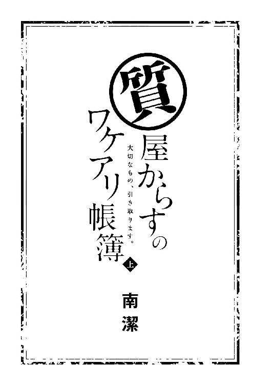

| 質屋からすのワケアリ帳簿 ～大切なもの、引き取ります。～ 上 (マイナビ出版ファン文庫) | |
| 南 潔 | |
| (2016) | |
本作品を電子化するにあたり、一部の漢字及び記号等が簡略化されて表現されている場合があります。
本書はリフロー形式で制作されています。本文は文字の書体と大きさを変えることが出来ますので、お好みの設定で読書をお楽しみください。

「――目黒さんには今月末で辞めてもらいたい」
千里は目の前が真っ暗になるのを感じた。
五月病をなんとか乗り越え、ほんの少しだが社会人生活にも慣れてきたときだった。部長の佐々木から「話がある」と呼び出され、緊張しながら会議室に入った千里に告げられたのは、想像もしていなかった言葉だった。
「ま......待ってください。どうしてですか？」
突然の退職勧告に、千里は思わず立ち上がった。
「どうしてと言われてもねぇ」
椅子に身を預けていた佐々木が眼鏡のブリッジを持ち上げながら、ねっとりした視線を千里に這わせる。
定年間近、温情で部長に昇進させてもらったという佐々木の評判は、同期の出世レースで最遅という結果にふさわしく、あまりよいものではなかった。女好きだとか、ドケチだとか、さまざまな噂がそういう情報に疎い千里の耳にも入ってくる。それらをすべて信じているわけではないが、千里が佐々木によい印象を持っていないのも、また事実だった。
「目黒さん。きみ、今月に入って大きな受注ミスを何度も繰り返しているね」
「受注ミス......？」
「きみが伝票に記載した納期や数字が、受注内容と大きく違っていたんだよ」
たしかに千里は受注業務に携わっている。しかし処理した件数はまだ少なく、佐々木の言う『大きなミス』というのも、思い当たる節はない。
「あの......なにかの間違いじゃないでしょうか？ 私にはまったく覚えがないんですが」
「きみの方に覚えがなくても、こっちには報告で上がってきてるんだよ。その伝票もあるんだ」
佐々木は手元の書類の束を叩いた。まるで威嚇するような大きな音に、千里の肩がびくりと跳ねる。
「児玉くんが気づいてフォローしてくれていなかったら、今頃うちは大事な取引先を失うことになっていた」
フォローがあったのなら、大事には至っていないはずだ。仮に千里が『大きなミス』を犯していたとして、辞めさせられるほどの責任を負うものなのだろうか？ 佐々木の話はとても納得できなかった。
「......それが理由なんでしょうか？」
「それだけならまだよかったんだがねぇ」
佐々木はわざとらしい溜め息をつき、千里を見上げた。
「――きみが切手を横領していると報告があったんだ」
千里は耳を疑った。
「私はそんなことしてません！」
「目撃者がいるんだよ」
強い口調で佐々木は言った。
「切手の減りがやけに早いことを不審に思ったらしくてね。気にかけていたら、きみが切手を持ち帰っているのを偶然目撃したと」
「......誰が目撃したんですか？」
「言えるわけないだろう」
そう言われて、確信した。
「......児玉さんですか」
「目黒くん」
千里が続けようとした言葉を、佐々木が目で制する。
「僕も大事にはしたくないんだ。きみから辞めてもらった方が、きみ自身の傷も浅く済む。再就職先も見つかりやすいと思うよ」
皮脂で曇ったレンズの奥に見える細い目が、千里をあざ笑うように歪んだ。
＊ ＊ ＊
会議室から出て席に戻ると、まわりの同僚は誰ひとり、千里と目を合わそうとはしなかった。彼らは佐々木が千里をどういう用件で呼び出したのか、知っていたのだろう。
気まずい空気が漂う中で、千里の肩にぽんと手を置いた者がいた。派手なピンク色のネイルが施された手――振り返ると、千里の上司である女性係長の児玉が立っていた。
児玉の年齢は四十代前半と聞いていたが、結婚していないせいか若く見える。しもぶくれの一見優しそうな顔立ちが、今の千里には般若のように見えた。
「短いあいだだったけど、一緒に仕事できてよかったわ。若いんだからまたすぐ次が見つかるわよ」
児玉は赤い唇を吊り上げて笑った。
駅を出た千里は、まっすぐ家に帰る気になれず、アパートとは反対方向へ足を向けた。
買い物客で賑わう商店街を通り抜け立ち寄ったのは、ブランコと鉄棒しかない小さな公園だ。千里は水飲み場のそばにある木製のベンチに腰掛けた。時間が遅いせいか、子供の姿はない。たまに犬の散歩をしている人が通り過ぎていく。
こうしてひとりになると、自分の置かれている境遇が現実味を帯びて迫ってきた。
まさか新卒で就職したばかりの会社を、試用期間中に辞めなければならなくなるとは思わなかった。身の潔白を証明する方法もあっただろう。だがあの針のむしろのような場所では、どちらにしろもう働けない。
そのとき、「カア」という鳴き声が上から降ってきた。
顔を上げると、夕刻の赤い空を走る電線の上にたくさんのカラスが留まっている。そのうちの一羽と目が合ったような気がした。黒い目がじっとこちらの様子を窺っている。気になってまわりを見てみれば、足元にキラリと光るものが落ちていた。まるいレンズの、つるのない眼鏡だ。
バサリという羽音とともに、カラスが下に降りてきた。
カラスは光り物を好む。千里がとっさに眼鏡を拾い上げると、カラスはピタリと動きを止めた。しばらくの睨み合いののち、カラスは諦めたように再び電線の上へと飛び上がった。
千里はほっと息をつき、手の中に視線を落とした。年季の入った美しいフレーム――眼鏡は生活必需品だ。きっと持ち主は困っているに違いない。
少し迷ってから、千里は手で包み込むように眼鏡を持った。最後に『コレ』をしたのは、会社で切手がなくなっていることに気づいたときだ。苦い思いを飲み込んで、千里は目を閉じる。
長い時間がかかった――「カア」というカラスの鳴き声に、千里はゆっくりと瞼を持ち上げた。
チカチカと目の前が点滅するのは、『コレ』をやったあとの副作用のようなものだ。千里はそれが治まるのを待ってから、眼鏡をハンカチに包み、公園をあとにした。
＊ ＊ ＊
「......質屋？」
赤い字で『質』と書かれた看板を見て、千里は小さく呟いた。
商店街の裏通りにある、二階建てのビル。モルタルの外壁はところどころ剝がれ、ひびが入っている。二階の窓の格子は錆びつき、入り口らしき一階の引き戸にもかなりの年季を感じた。よく言えばレトロ、悪く言えばおんぼろだ。『からす』と黒地に白で染め抜かれた暖簾から、なにかの店であることは予想がついていたが、まさか質屋だとは思わなかった。
中に入るのは勇気がいる。エアコンの室外機の上にでも置いて帰ろうかと思ったが、ここでも電線の上にいるカラスたちが目についた。悩んでいると、『質』の看板の下に貼られたプレートが目に入った。
『あなたの大切なもの、高値で引き取ります』
ブランド品や貴金属を買い取るという宣伝ならわかるが、『大切なものを引き取る』というのは珍しい。
そのとき、質屋の戸がからりと開いた。
「うちになにか用？」
暖簾のあいだから顔を出したのは、黒ずくめの服を着た男だった。
日本人にしては珍しい明るい色の髪と瞳、肌は長いあいだ日に当たっていないかのように白い。実際会うまでは言葉が通じるか不安だったが、流暢な日本語を聞いて安心した。
「あの、忘れ物を届けに来たんです」
素早く男の容姿を確認した千里は、ハンカチに包んだ眼鏡を取り出し、差し出した。しかし男は受け取ろうとせず、千里をじっと見つめてきた。
「どこでこれを？」
「そこの公園のベンチで拾いました」
千里が答えると、男は人差し指でとがった顎を撫でた。
「きみ、前にどこかで会ったことあったかな？」
「え？ いいえ、ないと思います」
千里が首を横に振ると、男は少し考えるような顔をした。
「どうかしましたか？」
「いや、いいんだ。わざわざありが――」
眼鏡を受け取った男は言葉を途中で切り、苦しげな表情で額を押さえた。
「急に立ちくらみが......」
「だ、大丈夫ですか？ ......ひゃっ！」
突然もたれかかってきた男に、千里は驚いて悲鳴を上げた。男の背は高く、小柄な千里が支えるのは容易ではない。肩にかけていた鞄が滑り落ち、中に入っていた荷物がコンクリートの上に散らばった。
「きゅ、救急車を呼びましょうか？」
「いや、ただの貧血だから......もう大丈夫」
男が千里から身体を離し、微笑んだ。
「驚かせて悪かったね。ああ、きみの荷物が」
荷物を拾い始めた男に、千里は慌てる。
「自分で拾います」
「いや、僕のせいだから。ああ、あっちになにか転がったように見えたんだけど」
男が少し離れたところにあるエアコンの室外機を指さした。千里はしゃがんでその下をのぞいてみるが、蜘蛛の巣が張っているだけで、他にはなにもない。
「いえ、こっちにはなにも落ちてませんでした」
「そう？ 僕の気のせいだったかな」
男は首を傾げながら、千里に鞄を差し出す。
「じゃあ私はこれで」
千里は男に頭を下げ、店を後にした。
背後でカラスが「アホウ」と鳴いたが、千里の耳には届かなかった。
＊ ＊ ＊
ひとりになると、黒ずくめの男はシャツの袖の内側に隠していたカードを取り出した。
「目黒千里――か」
男は小さく呟いて、店の中に戻った。
じめじめした梅雨が、やっと明けた。
勤めていた会社を辞めて約一か月。千里はいまだに再就職先が決まっていなかった。
面接を受けた会社は両手の指の数を超えていた。年齢やパソコンスキルなどの条件をパスしても、新卒で試用期間中に辞めたことがネックになっているのか、不採用が続いている。
問題はそれだけではない。お金だ。
収入がなくなったのに、出ていくお金は多い。生活費に加えて国民年金、健康保険、就職活動にかかる交通費なども馬鹿にならない。おかげで大学生のときに貯めた雀の涙ほどの貯金を切り崩すことになった。就職活動の合間に日雇いのアルバイトに出たりもしたが追いつかず、とうとう生活口座の残高は一万円を切ってしまった。
「疲れた......」
この日、十何度目かの不採用通知をメールで受け取った千里は、暗い気持ちを引きずりながら自分のアパートに戻ってきた。
『止まり木荘』は築二十年、二階建ての木造アパートだ。六畳一間バストイレ付きで家賃五万五千円。建物は古いが、駅や商店街が近く便がいいので、千里は学生時代から引っ越すことなく住み続けている。
「目黒さぁん」
錆びついた鉄製の階段を上がろうとしたとき、箒を持った白髪の女性に呼び止められた。
「唐丸さん、こんにちは」
大家の唐丸は八十を過ぎているが、足腰頭ともにしっかりしている。このアパート以外にも不動産を所有しており、すべて自分で管理しているらしい。
「こんにちは。あらぁ、どうしたの？ この暑いのにスーツなんか着ちゃって」
「ちょっと事情があって......」
千里は曖昧に笑って誤魔化した。今着ているグレーのリクルートスーツは大学時代の就活時に買ったものだ。就職先は制服が支給されていたので二度と袖を通すことはないと思っていたのだが、皮肉なことに、また活躍させることになってしまった。
「それより、どうかしましたか？」
「ああ、そうそう。目黒さんの家賃なんだけど、今月分が引き落としできなかったの」
「えっ？」
千里は驚いた。
「家賃の引き落とし口座、残高なくなってない？」
「そんなはずはないんですが......」
家賃が引き落とされている口座は、生活口座とは別にしている。最後に通帳に記帳したのは、アパートの更新料を支払った四月。そのときはまだ十分に残高があった。
「とにかくすぐに確認して。目黒さんの携帯に電話したんだけど連絡つかないし、保証人になってるあなたの叔父さんに電話してみたら、そっちもつながらなくて......最近、連絡とってる？」
「いえ、最近はまったく」
千里の叔父である目黒新二は不動産コンサルティングの仕事であちこち飛び回っている。最後に会ったのは、確か大学の卒業式だ。
「今日は無理でしょうから、明日まで待つわ。半分でもいいから入れてちょうだい」
「......はい、すみません」
猶予を与えてくれたのは、大学生のときから部屋を借りている千里への大家の情けだろう。庭掃除に戻る唐丸に、千里は頭を下げた。
＊ ＊ ＊
大家と話をしたあと、通帳を持って銀行に向かった千里は、ＡＴＭの前で絶句した。
この口座は千里が高校生のときに叔父に付き添われて開設し、亡くなった両親の保険金や自宅を売ったお金を入れていた。大学の授業料やアパートの敷金・礼金、家賃など、金額の大きいものは、ここから支払うようにしていたのだが――。
「残高三百九十八円......？」
機械から吐き出された通帳を見ると、この一か月のあいだに何十回にも分けてカードでお金が引き出されていた。
千里は外に出ると、携帯を取り出し叔父の新二に電話をかける。一度目の電話では出ず、時間をあけて何度か電話をするうち、やっと新二につながった。
「......千里か？」
長いコール音のあとに出てきた新二の声は、どこか警戒しているような響きを含んでいた。
「そうだよ。久しぶり、叔父さん」
「ああ、久しぶりだな。元気か？」
人のよさそうな叔父の顔を思い浮かべつつ、千里は話を切り出した。
「あの、叔父さんに訊きたいことがあって電話したの。高校のときに作った私の銀行口座のことなんだけど、キャッシュカードは叔父さんが持ってたよね？」
簡単にお金を引き出す癖がつくとよくないからと言われ、通帳と印鑑だけは千里が持ち、キャッシュカードは社会人になるまで新二に預けることになった。千里はカードを返してもらった記憶がないので、新二が持っているはずだ。
しかし、いつまで待っても、新二から返事がない。
「叔父さん？ 私の声、聞こえてる？」
「千里......本当にすまん......ふがいない叔父さんを許してくれ......」
とつぜん泣きそうな声で許しを乞われた千里は、意味がわからず目を瞬かせた。
「叔父さん？ なにかあったの？」
「もうじきこの電話番号も使えなくなる。落ち着いたらまた必ずこっちから連絡するから」
「ま、待って、叔父さん！ まだ話が――」
「とにかく、叔父さんを信じて待っててくれ。じゃあな！」
一方的に電話は切れた。
「叔父さん？ もしもし？」
千里が何度呼びかけても、向こうから返ってくるのは無機質な機械音だけだった。
＊ ＊ ＊
「おしまいだ......」
アパートに戻った千里はスーツのジャケットを放り投げ、スカートが皺になるのもかまわず、畳の上に倒れ込んだ。
さっき一方的に電話を切られたあと、千里は新二がひとり暮らしをしているマンションへ向かった。
新二の部屋は空き部屋になっていた。それを見た千里は、自分の口座からお金を下ろしたのが新二だと認めざるを得なかった。
交通事故で親を亡くした自分を引き取ってくれた叔父。一緒に暮らしたのは高校時代の数年間だが、体育祭や卒業式などの行事にも仕事を休んで駆けつけてくれた。そんな優しい叔父に、いったいなにがあったのだろう。
「これからどうしよう」
天井の染みを眺めながら、千里は呟く。問題は当面の生活費だ。滞納している家賃のこともある。まとまったお金が早急に必要だった。
「夜のお仕事......は私には無理だ」
手っ取り早く稼げる方法として思いつくのは、それくらいだ。しかし、女子高、女子大と進み、男性とお付き合いどころか話をする機会さえほとんどなかった千里には、ハードルが高すぎる。そもそも、若いだけしか取り柄のない千里を雇ってくれる店があるかどうかも怪しい。
頼れる親戚も友人もいない千里は、八方ふさがりだった。
『あなたの大切なもの、高値で引き取ります』
そのとき千里の脳裏をよぎったのは、あの黒ずくめの男の顔だった。
千里はむくりと起き上がり、押し入れから煎餅の空き缶を引っぱり出した。昔の学生証やお守りなど細々としたものが入った中から取り出したのは、青いビロードのケースだ。
中身を確認した千里は、ケースを鞄に押し込んで、部屋を飛び出した。
『質』と書かれた看板には、オレンジ色の明かりがともっていた。
二十二年生きてきて、質屋に客として入るのはこれが初めてだ。できればしたくない経験だったが、もうあとには引けない。
千里は深呼吸してから、戸を開けた。
「......こんばんは」
中に入ると、狭いスペースに天井まで届きそうな大きな衝立と、布張りの古ぼけた椅子が置いてあった。どうやらここは待合室のようだ。
「すみません」
言葉を変え、もう一度声をかけてみる。しかし誰も出てこない。おそるおそる衝立の向こうをのぞくと、窓のない殺風景な空間に、事務机と椅子がふたつあるだけだった。
てっきり質屋にはブランド物のバッグや時計が並ぶショーケースがあると思い込んでいた。ここは本当に質屋なのだろうか？ 不安を覚えながらきょろきょろと室内を見回していると、奥にある塗装のはがれたドアが開いた。
「いらっしゃいませ」
出てきたのは黒いシャツに黒いパンツを身に着けた男――千里が眼鏡を届けた相手だ。彫りの深い整った目鼻立ちと、日本人には珍しい明るい髪色、そして黒ずくめの服装は、何度見てもインパクトがある。
「ああ、きみはこの前の」
男も千里のことを覚えていたらしい。目を細め微笑むさまは外国の絵画に出てくる貴族のようだったが、あいにく千里には鑑賞する趣味も余裕もなかった。
「今日もなにか届けに来てくれたのかな？」
「......いえ、今日は買い取ってもらいたいものがあって来ました」
緊張した面持ちでそう告げると、男はすっと笑みを消した。
「――そこにかけて」
千里は椅子に腰をおろすと、鞄から青いビロードのケースを取り出し、机に置いた。向かい側に座った男はシャツの胸ポケットに入れていた眼鏡をかけ、白い手袋を着けてケースを開ける。
「結婚指輪？」
「はい」
男は慣れた手つきで銀色の指輪を手に取り、眺める。しかし、それもわずかな時間で、すぐにケースに戻してしまった。
「申し訳ないけれど、うちでは買い取れない」
こんなにあっさり断られると思わなかった千里は、かなり焦った。
「待ってください！ これは偽物じゃありません。両方ともプラチナで――」
「偽物だろうと本物だろうと、うちでは買い取らない。他の質屋なら買い取ってくれるかもしれないけれど、まあ大した金額にはならないだろうね」
穏やかな声色には似つかわしくない辛辣な言葉に、千里はしばらくのあいだ呆然とし、そして我に返った。
「で、でも、このお店は『大切なもの』を引き取ってくれるんですよね？」
「うん」
手袋をはずしながら微笑む男に、千里は身を乗り出した。
「この指輪は大切なものなんです。事故で死んだ両親の形見で――」
「悪いけど、同情は引き取る要因にはならない」
取り付く島もない言い方だった。
「今の世の中、両親のものイコール大切なものという公式は成立しないんだよ。わかるかな、お嬢さん」
「......成立する場合もあると思います」
「なら訊くけれど、きみはこれを売ることを躊躇した？」
千里は返事をすることができなかった。男の硝子玉のような瞳に、すべてを見透かされているような気がした。
「――訊くまでもなかった、ってとこかな」
そうだ、訊くまでもない。悲劇のヒロインを気取るには決定的に演技力が足りなかった。千里は黙って、指輪の入ったケースを鞄に戻した。お金にならなかった上に、後味の悪い結果になってしまった。
椅子から立ち上がったとき、男が「待って」と千里を呼び止めた。
「なんですか？」
「きみはまだ売るものを持ってるはずだよ、目黒千里さん」
「どうして私の名前......」
男に名乗った覚えはない。戸惑う千里に、男は見覚えのあるカードを差し出してきた。
「私の保険証！」
それは会社に所属していたときの千里の健康保険証だった。退職する際、会社に返却しなければならなかったのだが、どこを捜しても出てこなかったため、紛失届を出す羽目になったのだ。
千里はカードを奪い取り、男を睨みつけた。
「......あのとき、盗んだんですね」
今思えば不自然だった。男が突然千里に倒れかかってきたのも、千里にエアコンの室外機の下をのぞかせたのも。きっと落とした荷物から意識を逸らすためだったのだろう。
「人聞きの悪い。拾ったんだよ」
「立ちくらみは嘘だったんですか？」
「嘘じゃないよ。僕の持病だ」
「持病？ なんの病気なんですか？」
「仮病という病気」
千里は呆れたように男を見た。しかし、男は読めない笑顔で笑うだけだ。腹立たしいことこの上ない。
「きみの名前を教えてもらったんだから、僕も自己紹介しようか」
「私は教えたつもりはありません」
「烏島廉士、この店の店主だよ。目黒くんと呼んでもいいかな？」
「嫌です」
「目黒くんは株式会社たかのめ食品に勤務」
この烏島という男は、まったく人の話を聞く気がないらしい。千里はげんなりした。
「だが、試用期間中に切手横領の濡れ衣を着せられて、自主退職に追い込まれた」
烏島が口にしたのは、保険証には記載されていない情報だった。
「どうしてあなたがそんなことを知ってるんですか？」
「烏島」
「......どうして烏島さんが知ってるんですか？」
名前を呼ばなければ話が進みそうになかったので、仕方なく言い直した。
「調べたからだよ」
「......濡れ衣だってことは？」
調べたところで、そこまではわからないはずだ。
「数年前から知人の金券ショップに定期的に大量の切手を持ち込んでくる女性がいるらしくてね。調べてみたら、きみが勤めていた会社の人間だった」
「......そうですか」
「驚かないんだね」
「知ってましたから」
千里は犯行を『視た』。証拠をつかもうとしたときに、運悪く相手に気づかれて、逆に犯人にされてしまったが。
「通報したそうだから、それなりの処分がくだるだろうね。彼女の不倫相手の部長にも」
「不倫？」
千里は目を見開いた。
「周知の関係だったそうだよ。気づかなかった？」
気づかなかった。千里は佐々木と児玉のふたりに嵌められたのだ。
「......なんのためにそんなことまで調べたんですか？」
烏島は千里の質問には答えず、分厚い茶色の封筒をテーブルの上に置いた。目顔で促された千里が封筒を開けると、中には見たことのないほどの大金が入っていた。
千里は、はじかれたように烏島を見る。
「両親の結婚指輪を売りに来るほど、お金に困ってるんだろう？」
「......そうですけど」
「そのお金、きみにあげるよ」
千里はごくりと唾をのんだ。聞き間違いではない。烏島は確かにこの大金を自分にくれると言った。まるで飴玉をあげるというような軽さでだ。
「それだけあれば、当面は不自由なく生活できるよ」
「こんな大金、もらえません！」
「誰も、ただでとは言っていないよ」
烏島は組んだ両手の上に顎をのせ、にっこりと笑った。
「――そのお金で、きみを買いたい」
頭に浮かんだのは『援助交際』という言葉だった。
「買うって......その、いかがわしい意味でですか？」
おそるおそる千里が尋ねれば、烏島はぷっと噴き出した。
「悪いけど、きみが想像しているのとは違う意味。僕はきみのような貧相な子は好みじゃない。平たく言えば、きみの能力を買い取りたいってこと」
「それならそうと、はじめっからそう言ってくださいよ！」
さりげなくひどいことも言われた気がするが、問題はそこではない。
「だいたい私、こんな大金もらえるような能力なんて持ってません。ワードとエクセルと、あとは英検三級くらいしか――」
「あいにくだけど、僕に嘘は通用しないよ」
硬直する千里に、烏島はにこりと笑いかけた。
「きみは公園のベンチに置き忘れていた眼鏡を店まで届けてくれた。どうして僕のものとわかったのか教えて」
「それは......前に烏島さんを見かけたことがあって」
「きみは僕と会ったことはないと言っていたよ」
千里は、あのときの烏島の質問の意図にやっと気づいた。自分の浅はかさを呪うが、もう遅い。
「長いあいだこういう商売をしているとね、嘘を見抜けるようになってしまうんだよ」
つまり千里の嘘も見抜いている。烏島はそう言いたいのだろう。きつく握った手のひらに汗がにじむのを感じた。
「この眼鏡は確かに珍しいけど、僕のことを知っている人でも、これが僕のものだとは特定できないだろう。それなのにきみは、確信を持って僕に渡した」
烏島は眼鏡をはずし、それを机の上に置く。
「――座って話をしようか、目黒くん」
仕方なく、千里は椅子に腰をおろした。
「きみは小学校のとき、精神科のクリニックにかかっていたことがあるね」
「......どうしてそんなことまで知ってるんですか？」
精神科にかかっていたことは、叔父の新二でさえ知らないはずだ。
「商売柄、調べ物は得意なんだ。店に持ち込まれた品々の裏付けを取るためにも」
烏島は「ちょっと待ってて」と言い、部屋を出ていった。しばらくして戻ってきたその手には、封筒が握られていた。
「きみのカルテのコピーだ」
烏島が封筒から出した書類を机に置く。千里は言葉にならない息苦しさを覚えた。
「......先生に会ったんですか？」
「いいや、きみを診た先生はいなくなっていて、詳しい話は聞けなかった」
そうですか、と千里は目を伏せる。
「カルテによれば、きみは他の人には見えないものが視えるらしいね。いったい、なにが視えるの？」
「......カルテに書いてあるんじゃないですか？」
「きみの口から聞きたいんだ――本当のことを」
硝子玉のような瞳がすべてを見透かしている気がした。烏島に嘘や誤魔化しは通用しないとわかる。昔から、この手の勘は冴えている。
「......モノに触れると、そのモノに関わった人が映像のように頭に浮かんできます」
家族と医者以外には、話したことのない秘密だった。
「きみが会ったこともない僕に眼鏡を届けることができたのも、その力を使って？」
「そうです」
「眼鏡に触れて、なにが視えた？」
千里は机の上に置かれた眼鏡に、ちらりと目をやった。
「眼鏡をかけて仕事をしている烏島さんです。あとは、このお店に出入りする様子なんかが、断片的にだけど視えました」
「よく店の場所がわかったね」
「隣の病院に見覚えがあったので」
病院の隣にある、暖簾がかかった店。戸の鍵を開け閉めする男の様子から、眼鏡の持ち主がこの店の人間だと確信した。特徴的な烏島の外見も判断材料になった。
「きみが視るのは、モノに残る人の思念のようなものかな」
「思念がどういうものかよくわからないけど......人の感情が流れ込んでくることはめったにありません。視えるのは映像だけで、音や声も聞こえないんです」
「モノだけ？ 人間は？」
「モノだけです。人に触れて映像が視えたことはありませんでした」
烏島は少し考えるように、顎に手を当てた。
「カルテにはカウンセリングによって幻覚を見ることはなくなったとあるけど、これはどういうこと？」
「治ったフリをしただけです。治らなかったら遠くの施設に入れたいって、親が先生に相談してるのを聞いたので」
父親、母親ともに世間体を気にする性格だった。幻覚が見えると繰り返す子供をそばに置きたくなかったのだろう。
「――よくわかった」
静かな声だった。烏島の中で千里の価値が決まったのだ。千里は膝の上で拳を握った。
「ますますきみがほしくなったよ、目黒くん。僕の話、受けてくれるね？」
烏島の反応は千里の想像と大きく違っていた。
「し......信じるんですか？」
「もちろん」
「気味が悪いとは思わないんですか？」
「思わないよ。ただちょっと、他の人間と違うものが視えるだけの話だろう」
なんでもないことのように言う烏島に、千里はあっけにとられ、続ける言葉を失った。
「で、どうかな？」
「私、は......」
千里は口を噤む。お金に困っていることは確かだが、力を使うとなれば、簡単には頷けない。それにまだ、叔父に会えればお金が返ってくる可能性だってある。
「......叔父に相談してから決めさせてください」
「無理だよ。夜逃げ中だから」
「夜逃げ？」
思わず声が裏返った。
「目黒新二さんは先物取引で多額の借金を抱えて行方不明になっている。連絡をとるのはしばらく無理なんじゃないかな」
消えた千里の貯金、引き払われたマンションの部屋、つながらなくなった電話。その原因が叔父の借金であるなら、連絡をとるのは確かに難しいかもしれない。
「どうだろう、目黒くん。きみにとっても悪い話じゃないと思うんだけどね」
千里は机の上の封筒に目をやった。両親がいなくなり、千里にとって叔父だけが頼れる相手だった。その叔父が借金を抱えて夜逃げ中。お金が返ってくることが見込めない今、烏島の申し出はまさに渡りに船だ。
「......やっぱり、無理です」
しかし、その船に乗ることはできない。
「理由を聞かせてもらえる？」
「力を使いこなす自信がないんです」
烏島は怪訝な顔をした。
「どういうこと？」
「ただ触れるだけでは視えないんです。かなり集中力を使うから......はっきり視えないこともあるし、まったく視えないこともあります」
「つまり、安定して使えない？」
千里は頷いた。しばらく力を使っていなかったこともあり、自分でもどれだけ視ることができるのか、わからない。
しばらくのあいだ、気まずい沈黙が続いた。
「きみが断る理由は、本当にそれだけ？」
「え？」
「僕には、きみがその力をあまり使いたがっていないように見える」
一番触れてほしくないところに、烏島は触れてくる。それをはぐらかすには、千里は正直すぎた。
「......世の中には知らない方が幸せなこともあるって言うじゃないですか。でもこの力は知らなくていいことまで知ってしまう。それで人を傷つけたり――」
「自分が傷ついたりした？」
「......はい」
中学生のとき、千里の上履きがなくなり、ゴミ箱から発見されるという事件があった。見つかった上履きに触れた千里が視たのは、親友が他の友達と笑いながら上履きをゴミ箱に押し込んでいる様子だった。最近では下手な正義感を振りかざし、力を使って不正を暴こうとしたのが仇になって、苦労して就職した会社を退職に追い込まれてしまった。
千里がこの力を使って思い知らされたのは、人間の汚い部分と、真実を知ってもどうすることもできなかった、自分の無力さだ。
「誰かに相談は？」
「......できませんでした」
「どうして？」
千里は少し迷ってから、口を開いた。
「他の人に見えないものが自分には視えると気づいたのは、十歳のときです。私はすぐに両親に相談しました。でも信じてもらえなくて......無理矢理病院に連れていかれて」
ずっと思い出さないようにしていた記憶だった。
「先生にはストレスからくる幻覚だと診断されました。だから私は幻覚ではないことを証明しようとして、いろんなモノに触れて、視えたことを両親に説明したんです。でも両親は信じるどころか、恐ろしいものでも見るような目をして――」
千里はそこで言葉を切った。思い出すだけでも苦しいのに、口に出すのはもっと苦しい。
「――この子はうちの子じゃない、って」
あのとき言われた言葉は、千里の心に一生消えない傷痕を残した。それ以来、千里は力のことを誰にも話さないと決めたのだ。
「目黒くんは、その力が嫌いかい？」
「......好きではありません。不気味な力です」
「でも、その力もきみの一部だ」
断定するような烏島の言葉が、千里の胸に鋭く刻まれる。
「きみはこれからも、そうやって自分を否定して生きていくの？」
千里はスカートを握りしめる。できることなら、自分で自分を否定することなどしたくはない。だがこれが、自分を守るための唯一の手段だった。
「きみの力は、人を助けることができる」
席を立った烏島が机をまわり込み、千里の傍らに跪く。
「人を、助ける......？」
「僕はきみのおかげで、大事な眼鏡をなくさずに済んだ」
烏島はそこで言葉を切り、膝の上に置いていた千里の手に自分の手を重ねた。
「秘密をひとりで抱えるのは苦しいだろう？」
ひんやりとした手から感じるのは、不思議なことに人の温もりだった。人からこんなふうに優しく触れられたのは、いつ以来だろう――千里の話を信じなかったくせに、千里に心を読みとられるのではと恐れた両親は、極力千里に触れないようにしていた。
「きみは、ずっとその力のことを誰かに話したかった。そして受け入れてもらいたかった――違う？」
千里はおそるおそる烏島を見た。烏島は笑っていた――先ほどまでと違うのは、その眼差しがひどく優しいということだった。
「......受け入れてほしかった」
ずっと胸に秘めていた弱音は、烏島によっていとも簡単に引きずり出された。
「信じて、受け入れてほしかった。誰かに相談したくても、相手にどう思われるか怖くて、どうしてもできなくて......」
千里の目からこぼれるのは、両親が亡くなったときには流れなかった涙だった。
「僕はきみの力を信じるし、気味が悪いとも思わない」
きみを信じる、気味が悪いと思わない。その言葉は、まるで催眠術のように千里の心に入り込んでくる。
「――僕がきみの力になるよ」
自分でも気づかないうちに、千里は烏島の手を握り返していた。
「質屋からす」は、二階建ての小さな建物だ。
一階には客と商談する部屋と、冷蔵庫ほどの大きさの金庫が設置された小部屋。裏口を出ると外付けの階段がある。
その階段をのぼり、金属製の重厚な扉を開ければ、殺風景な一階とは別世界が広がっていた。
一間続きの広い部屋には赤い絨毯が敷き詰められ、来客用の立派なソファとテーブル、通りに面した窓のそばには飴色に輝くアンティークデスクと革張りのチェアが置かれている。壁には頑丈な棚が並び、そこにはさまざまな品物が所狭しと収められていた。
窓から入り込む日差しは夏真っ盛り。エアコンがよく効いているので室内は快適だ。来客用のソファに座って黙々と作業をしていると、あまりの心地よさに眠くなってくる。
「......飽きた」
千里がぽつりと呟くと、デスクでファックスの束に目を通していた烏島が顔を上げた。
「なにか言った？」
「いいえ！」
千里は慌てて、持っている布を動かした。
「メダルに飽きたならトロフィーがあるよ」
「聞こえてるじゃないですか......」
千里は、げんなりしながら烏島を見た。
千里が質屋に『再就職』してから、三日がたっていた。
服はなんでもいいと言われ、悩んだ末にシャツとスーツのタイトスカートに落ち着いた。ヒールの低いパンプスを履き、肩まである髪はひとつにまとめ、心機一転、社会人として再スタートを切ろうとしたのだが――。
千里に与えられた仕事は、棚に収まっているさまざまな品を磨き上げることだった。
年代物の銀食器、年季の入った手鏡の数々。それらを朝来て夕方帰るまでひたすら磨く。てっきり『力』を使って質入れされた品物の鑑定をさせられると思っていた千里は、拍子抜けした。
三日目の今日は、表彰式で贈られるような大量のメダルを渡された。せっせとそれを磨きながら、千里はこっそりと烏島を観察する。
ここで過ごしているあいだにわかったのは、店に客が来ないこと、店主の烏島はかなりの出不精だということ、そして千里にはまったく価値がないと思えるものばかりを大事にコレクションしていることだった。
千里が見る限り、質屋の仕事で儲かっているとは思えない。しかし、烏島が金に困っている様子もない。いったいこの男は何者なのか。黒ずくめの服、日本人離れした容姿、年齢不詳の言動――謎は深まるばかりだ。
「――そんなに見つめられると穴が空きそうだな」
千里の視線を感じたのか、烏島が苦笑した。
「僕にかまってもらいたいの？」
「ち、違いますよ！」
「それは残念。じゃあ、なにか訊きたいことでも？」
烏島がファックスの束を置き、デスクの上で腕を組む。
「あの......このメダルどうしたのかなって思って」
テーブルに並んでいるたくさんのメダル。たまに銀や銅も交ざっているが、圧倒的に金が多い。
「質流れしたものだよ」
「質流れ？」
「質屋というのは期限内に利子と元金さえ払ってもらえれば、品物は客に返すんだ。だが、支払いに来なければ質流れとなって、所有権は質屋に移る」
烏島は席を立ち、千里がいるソファへと歩み寄る。テーブルの上のメダルをひとつ手に取り、愛おしそうに目を細めた。
「このメダルやトロフィーは、昨日が流質期限だったんだ。よって、もう僕のものだ」
「有名な選手のメダルなんですか？」
よくよく見れば金メダルはすべて神除市の剣道大会のもので、それ自体には金銭的な価値がなさそうだった。
「いや、普通の高校生だよ。小学生のときから剣道の大会に出て、コツコツ獲得したものらしい。汗と涙の結晶だね」
「誰が持ち込んだんですか？」
「母親」
千里は息をのんだ。
「初めて彼女が持ち込んだのはこれだ。子供が小学生のときに初めて獲得した金メダル。五万円をご融資した」
烏島が手にしたのは、プラスチックにメッキが施されたメダルだった。それに、五万円――千里は目を剥いた。
「五万円も出したんですか？」
「うちの査定基準は市場価値ではないからね。あくまで僕の基準だ」
烏島の基準がさっぱりわからない――だからこそ、千里の両親の結婚指輪は買い取ってもらえなかったのだろうが。
「これ二十個以上ありますけど......」
「彼女、メダルひとつにつき五万借りられることに味を占めたみたいでね。その翌日にはメダルやトロフィー全部を質入れしに来たよ――子供に内緒でね」
ひとつにつき五万円として単純に計算すれば、トータルで百万円――味を占めるのは当然だろう。言葉を失う千里に、烏島はくすりと笑う。
「お金で人はおもしろいほど変わるんだよ。きみも知ってるだろう？」
千里の中に苦い感情が込み上げてくる。新二もやはりお金で変わってしまったのだろうか。怒りよりも哀しい気持ちの方が大きかった。
「質入れっていうのは、利息と元金を払えば取り戻せるというところに罠があるんだ。大事なものをただ売るのと違って、罪悪感も薄れる。でも実際、出質――質から出すことを出質すると言うんだけど、それができる人はほとんどいない」
確かに、大事なものを売るのは勇気がいる。だが、質入れなら戻ってくる、そう思うと、敷居が低くなるのかもしれない。
「はじめは真面目に利子を払いに来ていた人も、そのうちだんだんと足が遠のいて、このとおりさ」
烏島が指し示す部屋の棚にはアルバムや位牌、雛人形など、多種多様なものが置いてある。どれも市場価値がありそうになく、その代わり個人的な思い出が詰まっていそうなものばかりだ。
「烏島さん、なんだか楽しそうですね......」
「金の前に儚く消える家族の絆を見るのは楽しいね」
「......悪趣味」
ぼそりと呟くと、満足そうに棚を眺めていた烏島がこちらを振り返った。
「なにか言った？」
「いいえ、なんにも！」
そのとき、部屋にブザーの音が鳴り響いた。烏島がアンティークデスクにあるパソコンの画面を切り替えると、一階の入り口でそわそわとあたりを見回している男の映像が映っていた。
「目黒くん、お客様だ」
烏島は、そう言って立ち上がった。
＊ ＊ ＊
質屋を訪れたのは、ズボンの上にのった非常に重そうな腹肉以外は特筆することのない、サラリーマン風の中年だった。
「――エメラルドだ」
男が机に置いたのは、布張りの小さな箱だった。蓋を開けると、四角くカットされた緑色の石が輝いている。一センチ――いや二センチ四方はある。
「こっちは鑑定書」
黒いベルベット調のファイルケースには、鑑定書と書かれた写真入りの証書が入っていた。それにひと通り目を通してから、烏島は男に向き直った。
「質入れを希望されますか？ それとも買い取りを？」
「買い取りだ」
「今日は身分証明書をお持ちですか」
「時間がないんだ。早くしてくれよ」
男はイライラした様子で、財布から抜き出した健康保険証のカードを机に叩きつける。
「目黒くん、保険証のコピーをとってくれる？」
急かされても烏島はゆったりしたペースを一向に崩そうとしない。
「は、はい」
烏島の斜め後ろでふたりのやりとりをハラハラしながら見守っていた千里は、受け取った保険証を部屋の隅にある、やたら高性能なコピー機でコピーし、烏島に渡す。
「それでは査定に入らせていただきます」
烏島は引き出しから小さなルーペを取り出した。眼鏡をかけ手袋をはめてから、緑色の石を手に取る。ルーペで石を見ていたのは、ほんのわずかな時間だった。
「――三百円ですね」
ルーペを置きながら烏島が発した言葉に、千里は耳を疑った。鑑定書のついたエメラルドが三百円――驚いたのは千里だけでなく、男もだった。
「なんだと？」
「三百円です、と申し上げたんですよ」
真っ赤な顔をした男は、烏島から石を奪い取り、席を立った。
「やっぱり閑古鳥が鳴いてるようなボロい店じゃ、まともな査定ができんな！ 帰らせてもらう！」
男は憤り、出口へと向かった。力任せに引き戸を開けようとするが、ガチャガチャと音が鳴るだけで、びくともしない。
「おい、なんで開かないんだ？」
「その扉、オートロックなんですよ」
すごい剣幕でこちらに戻ってきた男に、烏島が説明する。千里は信じられない気持ちで烏島を見た。質屋の入り口にカメラがついていたことを知ったときにも驚いたが、まさかあのボロ――古い戸がオートロックだったとは。
「ふざけるな！ 早く開けろ！ 警察に通報するぞ！」
しかも、外から開かないというならわかるが、内側から開かないというのはどういうことだろう。
「通報されて困るのはお客様の方じゃありませんかね」
烏島は男の恫喝を受け流し、机の上に置き去りになっていた鑑定書を手に取る。
「この鑑定書は、どちらで手に入れました？」
「宝石を買ったときについてきたんだよ」
「おかしいですね。『鑑定書』が発行されるのはダイヤモンドだけなんですよ。その他の石に発行されるのは『鑑別書』なんです。エメラルドに『鑑定書』がついてくるなんて、ありえない」
男の表情に、初めて動揺が走った。
「そ、そんなこと、俺は知らん」
「じゃあ、こちらはどういうことかわかりますか」
烏島は、千里がとった健康保険証のコピーを男に突き出した。
「普通、健康保険証は、コピーをとると『複製』という文字が浮かび上がるはずなんですよ――本物ならね」
コピーした健康保険証には『複製』という文字は浮かんでいなかった。つまり偽物ということだ。これには千里も驚いた。見た目も触れた感じも、本物のように見えたからだ。
「半年前、隣町で起きた強盗殺人事件はご存知ですか？」
完全に勢いをなくした男に烏島がそう切り出すと、それまで紅潮していた顔がわかりやすく青ざめた。
「犯人は捕まりましたが、盗まれたものの中で被害者が着けていたと思われるエメラルドの指輪だけがまだ見つかっていないんです。警察から情報提供を求めて写真が送られてきたんですが......そう、ちょうどあなたが持っている石に大きさも形もそっくりでしてね」
男の顔色が、青から白へと変色していく。握った拳が震えているのは怒りからではない――恐怖からだ。
「安心してください。あなたのエメラルドは三百円程度の『精巧な模造品』でした。あなたもそれをわかっていてうちに持ち込んだ――そうですよね？」
「......そ、そうだ」
烏島に気圧されたのか、男はぶんぶんと頷いた。
「でしたら、うちで買い取る分には、なんの問題もありません」
烏島は書類を取り出すと、それを男の前に置き、にこりと微笑んだ。
「それでは、あなたの『本物の身分証明書』を出していただけますか？ それから売渡書にサインを」
＊ ＊ ＊
「どうして、あのエメラルドが盗まれたものだと気づいたんですか？」
二階の部屋に戻ってから、千里はずっと気になっていたことを烏島に尋ねた。
「警察や同業者から盗品なんかのリスト情報がまわってくるんだよ」
ソファで楽しそうにエメラルドを弄んでいた烏島が指さしたのはデスクの上のファックスの束だった。
「まさか全部覚えてるんですか？」
「さすがに全部は無理だよ。うちに持ち込まれそうなものだけ絞り込んでチェックしてるんだ。それにあの男、店に入ってきた時点でかなり怪しかっただろう？」
「......私にはわかりませんでした」
千里には横柄な中年の男にしか見えなかった。
「モノを見る前にヒトを見る――それが質屋の鉄則だよ」
烏島はそう言うと、自分の隣の空いたスペースをポンと叩いた。
「目黒くん、座りなさい」
千里が隣に腰掛けると、烏島の真剣な表情にぶつかった。
「裏付けを取りたい」
なにを求められているか、千里はすぐに理解した。
「......わかりました」
エメラルドを受け取った千里は、深呼吸して目を閉じた。
緊張しているせいか、映像が視えるまでかなりの時間がかかった。判別できない短い映像が細切れになって、浮かんでは消える。しばらくそうしているうちに、鮮明な映像が浮かんできた。
頭から血を流した老女――皺だらけの手に光る指輪――それを抜き取り、指輪の台から緑色の石をはずす男。
千里は目を開け、こちらの様子を窺っていた烏島を仰ぎ見た。
「ち......血だらけのお婆さんから、さっきの男が指輪をはずしていました......」
烏島はソファから立ち上がると、棚からファイルを取って戻ってきた。
「きみが視たお婆さんは、この人かな」
切り取られた新聞記事に載っている顔写真は小さくて少しわかりづらいが、確かに千里が視た老女だった。
「そうです、この人です」
「彼女は半年前に強盗に殺された資産家だ。死体の第一発見者は彼女の甥だよ」
烏島がエメラルドを持ち込んだ男の運転免許証のコピーを横に並べる。その名前は、新聞記事に載っている甥の名前と同じだった。
「......やっぱりあの人が盗んだんですね」
「警察に通報する前に死体から指輪をかすめ取って、ほとぼりが冷めたころ金に換えようとしたんだろう。高値をつけさせるために鑑定書まで偽造したけど、お粗末すぎたね。あれじゃ『閑古鳥が鳴いてるようなボロい店』だって騙せない」
どうやら烏島は男に言われたことを根に持っているらしい。
「このエメラルド、いくらくらいするものなんですか？」
「この質と大きさなら、売りに出せば少なくともゼロが六つはつくよ」
ゼロが六つということは、数百万だ。それを三百円で買い取るとは――千里は目を剥いた。
「もしあの男が警察に行って、本当のことを話したらどうするんですか？」
「別にどうもしない。僕と彼の取引に後ろ暗いところはなにもない。だいたい彼が警察に行って本当のことを話したところで、逮捕されるだけだ。盗みだけじゃなく鑑定書や身分証明書の偽造もしてるからね」
烏島は千里の手からエメラルドを取り上げると、棚に飾ってあったワイングラスの中に投げ入れた。カランと音が響く。ゼロが六つつく価値の宝石に対し、扱い方は三百円レベルだ。
「それ、どうするんですか？」
「そうだね......汚れてきたら、またきみに拭いてもらおうかな」
それなら箱にでも入れて大事にしまっておけばいいではないか。千里が溜め息をついたとき、急に眩暈に襲われた。目を閉じ、額を押さえる。
「どうしたんだい？」
千里の異変に気づいた烏島が声をかけた。
「力を使ったあとは貧血みたいな症状が出るんです......すぐに治りますから」
「少し休憩しようか」
しばらくして、烏島がトレイにティーセットをのせて戻ってきた。蔦の巻きついたような持ち手が美しいティーカップに、流れるような手つきで茶を注ぎ、千里に差し出す。
「飲んで。少しは落ち着くよ」
「あ......ありがとうございます」
ひと口飲むと、よい香りが鼻に抜けた。普段なら砂糖を入れるところだが、烏島の紅茶はそのままで十分おいしい。
「......烏島さん」
眩暈が治まってから、千里は向かい側のソファで茶をすすっていた烏島に声をかけた。
「うん？」
「私の力、本当に役に立つんでしょうか？」
立ちのぼる湯気の向こうで、烏島が首を傾げる。
「なぜ急にそんなことを？」
「私が視なくても、烏島さんは十分な情報を手に入れていますよね。それに私、質屋の仕事についてなにも知らないし......」
勉強して簡単に身につくものではないということは、烏島と客とのやりとりを見てよくわかった。知識と経験、それに話術、あとは勘がよくなければやっていけない。
烏島はカップを置き、感心したように千里を見た。
「きみみたいなストローヘッドでも、気を遣うんだね」
「ストローヘッド？」
「脳味噌がないってこと。英検三級持ってるんじゃなかったっけ？」
千里は脱力した。烏島はかなり口が悪い――笑みを浮かべながら優しげな口調で言うので気づくのが遅れるが。
「目黒くんが気にする必要はないさ。ここは一般的な質屋とはちょっと違う。質屋の仕事は今までどおり僕がやるよ」
「でも物を磨くだけじゃ......」
烏島から提示されている給料は前の会社よりも額が多い。能力を買うという名目で、事前にまとまったお金ももらっている。布で質流れ品を磨くだけでは気が引けた。なにより飽きる。
「心配しなくても、きみにやってもらいたい仕事は他にある」
「他に？」
首を傾げる千里を無視し、烏島はすいとドアの方へ視線を向けた。ドアをノックする音に「ちょうどいいタイミングだね」と千里に微笑みかける。
「――きみの本領発揮はここからだよ、目黒くん」
部屋に入ってきたのは、背の高い高校生だった。
水色のシャツに黒のネクタイと黒のパンツ。千里でもこの制服がどこの学校のものかくらいは知っている。入学するためには学科試験だけではなく、親の職業、家柄、資産の調査まである鳳凰学園のものだ。
「七杜の坊ちゃんじゃないですか。こんにちは」
烏島が嘘くさい笑顔――千里にはそう見える――を貼りつけてソファから立ち上がる。千里も慌てて烏島に倣った。
「その呼び方はやめろ」
「失礼しました、宗介くん。今日はどういうご用件で？」
「仕事の依頼に決まってんだろ」
宗介と呼ばれた青年は不機嫌そうに言い、烏島が座っていた場所にどっかと座った。
仕事の依頼で二階にこうして客が訪ねてくるのは、千里が知る限りこれが初めてだ。それも高校生。いったい何者なのだろう。
「目黒くん、悪いけどテーブルを片付けて」
「あっ、はい」
宗介の向かい側に座り直した烏島に言われ、千里は慌ててティーセットを片付ける。
「あんた、ここでなにやってんだ」
テーブルを拭いていた千里が顔を上げると、宗介がじっとこちらを見つめていた。漆黒の髪からのぞく鋭く切れ上がった目。背もたれに両腕をかけ脚を組む姿は、千里より年下とは思えないほど貫禄がある。
「え？ 私は――」
「うちの従業員だよ」
宗介の向かいに腰掛けた烏島が、千里の言葉を途中でさらう。
「僕の仕事を手伝ってもらっているんだ。彼女にも同席してもらうけどいいかな？」
「断る。信用できない」
「了承していただかないと、仕事は受けられないな」
ギロリと宗介が烏島を睨んだ。千里はその迫力にすくみあがる。しかし烏島は動じない。
気まずい沈黙ののち、折れたのは宗介の方だった。
「......勝手にしろ」
「だそうだよ。目黒くん、こっちへ」
高校生と言えども相手は客だ。丁重に対応している店主に倣い、烏島は千里に自分の隣に座るよう促した。千里は躊躇いがちに烏島の隣に腰掛ける。
「目黒くん、こちらは七杜宗介くんだ。鳳凰学園高等部の三年生だよ」
「目黒千里です。よろしくお願いします」
千里が頭を下げると、宗介ははっと小馬鹿にしたように笑い、烏島を見る。
「おまえが女を雇うなんてな」
「雇ったんじゃない、買ったんだよ」
誤解を招くような烏島の発言に宗介は呆れたような顔をし、ちらりと千里の方を見る。
「......趣味わりぃ」
宗介の小さな呟きはしっかり千里の耳に届いた。千里は「性格悪い」と心の中で呟く。
「では、本題に入ろうか」
烏島が水を向けると、宗介は人を食ったような態度を消し去り、真剣な表情になった。
「はじめに言っとくが、今回の件は七杜の家とは無関係だ。くれぐれも内密に進めてくれ」
「お父様にも？」
「ばれたら止められるのは目に見えてる。親父の性格、知ってるだろ？」
「事を荒だてるのを嫌う平和主義者だね」
「もとい、利己主義者だ」
そう言って、宗介は布に包まれたなにかを烏島に渡す。布の中から出てきたのは、ちぎれた鎖とコインのようなものだった。全体が焦げたように黒ずんでいる。
「これは......ペンダントかな？」
「うちの屋敷で働いてた使用人のものだ」
「働いてた、ということは、今はいない？」
烏島の問いに、宗介の表情が曇る。
「――消えたんだよ」
その表現に、千里は違和感を覚えた。
「消えたというと？」
「突然、屋敷からいなくなったんだ」
宗介がテーブルに置いたのは履歴書だった。そこに貼りつけられた証明写真には、化粧っ気のない綺麗な女性が写っていた。
「名前は森沢陽子。年齢は二十歳。半年前から住み込みで働いていた。先週の火曜日の朝、仕事に出てこない彼女を心配した使用人頭が様子を見に行ったら、部屋はもぬけの殻だった。置き手紙も伝言もなしだ」
「警察に届けは？」
「ンなもん、あの親父が出すはずがないだろ。若い女は気まぐれだからな、で終わりだ」
思い出すのも忌々しいといった様子で、宗介が言う。
「でも、きみは納得してない」
「なにも言わずにいなくなるような人じゃねえんだよ」
「ただの使用人に、ずいぶん肩入れしているんだね」
宗介は不機嫌さを露わにして、烏島を睨みつける。
「あんた、ずいぶんつまらねえ詮索をするようになったな」
「これは失礼しました。続きをどうぞ」
宗介は眉間に深い皺を刻んだまま、口を開いた。
「陽子さんの失踪には不審な点がある」
「具体的には？」
「彼女がいなくなったあと、裏庭の焼却炉でなにかを燃やした跡を見つけた。燃え残りの中から出てきたのが、そのペンダントだ。陽子さんが着けていたのを見たことがある。大事なものだと言ってた」
「彼女が燃やしたのかな？」
「さあな、誰も見てないからわからない。でも、本人が大事にしてたものを自分で燃やすか？」
「人間は、ときに予測できない行動をとる生き物だよ」
烏島は眼鏡をかけ、黒ずんだペンダントを調べ始めた。
「かなり古いもののようだ。金属が劣化してる。ペンダントトップになにか模様が刻まれていたようだけど、判別できないな。ここになにが描かれていたか覚えてる？」
「覚えてないが、イニシャルじゃなかったことは確かだ」
「どちらにしても、これが失踪の鍵を握っていそうだね。預かっても？」
「いいぜ」
烏島はペンダントを布で包み直し、ちらりと隣の千里に視線を流した。あとで『視ろ』ということだろう。
「他に気になったことは？」
「いなくなる少し前くらいから様子がおかしかった。誰か自分のことを訪ねてきた人間はいないか、自分について問い合わせるような電話がなかったか、かなり気にしていたようだった。まるで誰かに――」
「追われているように見えた？」
烏島と宗介の視線が絡む。しばらくの沈黙ののち、宗介は頷いた。
「......ああ」
「依頼は彼女の捜索でいいのかな？」
「彼女がいなくなった理由も調べてくれ。トラブルに巻き込まれているようなら、助けたい」
烏島は居住まいを正すと、宗介に向かって一礼した。
「――この件、烏島廉士が確かに承りました」
＊ ＊ ＊
「ここは、質屋じゃないんですか？」
宗介が帰ってから、千里は烏島に尋ねた。
「質屋だよ。どうして？」
デスクでパソコンを使っていた烏島が首を傾げる。夕暮れの日差しを背中に浴びて、烏島の色素の薄い髪が赤く染まっていた。
「質屋なのに人捜しまでするんだなと思って......」
「こういう仕事をしていると、品物だけじゃなく情報も集まってくるからね。それをあてにした客が来るんだよ」
確かに烏島は、千里についても詳しい情報を持っていた。カルテのコピーなど、簡単には手に入らないものまであった。
「あの男の子っていったい何者なんですか？」
宗介は代金について、言い値を払うと言っていた。いくらお金持ちでも、高校生がそんなに自由になるお金を持てるとは思えない。
「彼の家は平安時代までさかのぼることのできる名家だよ。七杜グループ、名前だけなら聞いたことがあるだろう？」
そう言われてみれば、七杜という名前のついた施設や会社を見たことがある。
「関連企業に建設、金融、病院、教育機関まで擁するグループ会社だ。彼の父親はそこのトップ――実質的に、この街を牛耳ってるようなものだね」
千里にはあまりピンとこなかったが、とりあえず桁違いのお金持ちであることはわかった。高校生には見えない態度の大きさも、そういうバックグラウンドがあるのなら頷ける。千里は絶対に好きになれそうにないタイプだが。
「何度も仕事を依頼されてるんですか？」
「彼の父親にね。宗介くんは代理でここに来ていただけで、彼からの依頼は初めてだ。さて、そろそろ始めようか」
烏島はノートパソコンを閉じると、ソファに座っていた千里の方へ歩いてきた。渡されたのは、宗介から預かった黒焦げのペンダントだ。
千里が烏島を見上げれば、烏島は小さく頷く。千里は深呼吸するとペンダントをそっと握りしめ、目を閉じた。
意外にも、映像はすぐに視えた。千里の前に広がるのはオレンジ色の炎だ。勢いよく燃え盛る炎の向こうに、人影が視える。そこに意識を集中させようとしたとき、突然映像が途切れた。
「......あ」
千里がおそるおそる手の中を見れば、ペンダントトップが割れていた。
「ああ、割れちゃったね」
手の中をのぞき込んだ烏島があっけらかんと言い、千里の顔からさっと血の気が引く。
「ど、どうしましょう......！ そんなに強く握ってないのに」
「仕方ないよ。寿命だったんだろう」
烏島は千里の手から割れたペンダントを取り上げると、布にくるんだ。
「それより、これからなにか視えたかい？」
「......炎と、人影のようなものが少し」
「顔は？」
「わかりませんでした......あの、もう一度やってみます」
少し頭はくらくらするが、エメラルドを視たときよりもひどくはない。
「いや、いいよ。ペンダントの状態も悪いし、これから情報を得るのは無理そうだ。それより、きみに頼みたいことがある」
烏島はデスクに戻ると、メモにペンを走らせ、千里に渡した。見れば住所が書いてある。
「これは？」
「七杜家の住所だ。きみには明日から調査に行ってもらう」
「調査......？」
「七杜の屋敷に行って、森沢陽子が姿を消した原因を探ってきてほしい」
突然すぎる話に、千里は目を見開いた。
「わ......私がですか？」
「質流れ品を磨くばかりじゃ飽きるだろう？」
「それはそうですけど！ でもいきなり調査って......烏島さんは行かないんですか？」
「僕は店がある。『質屋からす』は年中無休だからね」
宗介の家、それも桁違いのお金持ちの家にひとりで乗り込む。考えるだけで千里は気が重くなった。
「そんな大事な仕事、私に務まるでしょうか......」
「務めるしかないんだよ、きみは」
千里の弱音は、ぴしゃりと床に叩き落とされた。
「これは仕事だ。できないなら辞めてもらうしかない」
唇にのせた笑みはそのまま、視線を鋭くする烏島に、千里はごくりと息をのむ。
「どうする？」
「......行きます」
千里の返事に満足した烏島は、極上の笑顔を見せた。
「きみの力を生かすチャンスだ――しっかり『視て』おいで」
「――で、あんたが来たってわけか」
大きな歌舞伎門の前で不機嫌さを露わにして腕組みをしているのは、依頼人の七杜宗介だ。
千里を見下ろす目つきは相変わらず悪い。田舎のヤンキーなど比にならないレベルだ。それでもどこか品を感じるのは、やはり育ちのよさのせいだろうか。白のポロシャツにベージュのパンツというシンプルな服装が、嫌味なほどよく似合っていた。
「......烏島さんの指示なんです」
千里の持っている鞄には一泊分の着替えが入っていた。今日から二日間、七杜家で調査をするためである。烏島の考えた七杜家への表向きの設定は、質屋の店員として審美眼を養うため、使用人体験をしつつ、屋敷にある調度品に触れ、その扱い方を学ぶという少々強引なものだった。
「烏島の指示ねえ......」
宗介は値踏みするように、千里の頭のてっぺんからつま先までを眺める。
宗介が自分に不信感を持っていることを、千里はよくわかっていた。調査に来たのが明らかに素人くさい女となれば、信用しろと言う方が難しい。
だがこちらも望んで来たわけではないのだ。途中、何度引き返したくなったかわからない。帰りたいと思いながら空を見上げれば、なぜかいつもカラスが目に入る。その黒ずくめの生き物を見るたび烏島に監視されているような気分になり、千里は重い足を引きずってここまでやってきた。
「それにしても暑苦しい格好だな。どうにかならなかったのかよ」
「仕事なので」
グレーのスーツのジャケットとスカートをキッチリ着込んだ千里の格好は、確かに見た目にも暑苦しいだろう。だがこれが千里の戦闘服なのだ。
「......ついてこい」
宗介はそう言い捨てて、千里に背を向けた。
門をくぐると、竹林に囲まれた私道がずっと先まで続いていた。千里の住む神除市は比較的田舎なので、敷地の広い家はそう珍しくないのだが、ここは桁違いだ。
「この道、毎日歩いてるんですか？」
「いつもは車だ」
振り返りもせず宗介が言う。それを聞いた千里は、もったいないなと思った。夏の強い日差しは竹林に遮られ、通り抜ける風も清々しい。蝉の鳴き声を聴きながら歩くのは気分がよかった。車では味わえないだろう。
「あの、七杜さん」
「名字じゃなく名前で呼べよ。あんた一応、俺の友人ってことになってるから」
親しくもない人間――それも仕事の客を名前で呼ぶことにかなり違和感を覚えたが仕方ない。
「......では、宗介さんと呼ばせてもらいます。友人って、ちょっと無理がありませんか？年も違うし......」
「彼女だとでも言えばよかったか？」
振り返った宗介が、唇の端を吊り上げた。
「やっ......やめてくださいよ！」
ぎょっとしてそう言えば、宗介はむっとした表情をする。
「冗談に決まってるだろ。俺にも選ぶ権利がある」
千里の好みは優しく落ち着いた大人の男なのだ。生意気な年下など願い下げである。
「私にだってありますよ！」
「七杜の長男のどこが不満だってんだ？」
「すみません。あいにく私は世間知らずなので、七杜の長男にどういう魅力があるかわかりません」
庶民である千里には、お金持ちだの名のある家だのと言われても、ピンとこない上に面倒なイメージしかない。
「......あんた変わってるな」
怒るかと思いきや、宗介は意外そうな顔をするだけだった。
「私は普通です。だいたい高校生が恋人って......犯罪になるじゃないですか」
「あ？ あんたいくつだ」
「二十二歳です」
宗介が足を止める。千里も足を止めた。しばしのあいだ、見つめ合う。
「あんたあれだな......残念な童顔」
「......失礼ですね」
自覚があるので、いつもよりしっかり化粧をしてきたつもりだったのだが、どうやら無意味だったようだ。
しばらく歩くと、急に視界が開け、目の前に美しい日本庭園が広がった。苔むした庭を彩るのは、青々とした木々と色とりどりの花々だ。大きな池には橋が架かっており、たくさんの鯉が泳いでいる。庭の石畳を進んでいくと、瓦葺の立派な建物が見えてきた。和洋折衷という表現がぴったりくる豪邸だ。
「宗介さま、おかえりなさいませ」
その玄関の前に、男が立っていた。白いシャツに灰色のベストを着けた、白髪の紳士だ。
「執事の高木だ」
宗介が簡潔に紹介してくれた。テレビや本ではよく見かけるが、現実ではなかなかお目にかかれない職業だ。
「目黒さまですね。暑い中、よくおいでくださいました」
頭を下げる高木に、千里も慌てて頭を下げる。
「目黒千里です。短いあいだですがお世話になります」
高木は「こちらこそ」と柔らかく微笑んでから、宗介の方へ向き直った。
「宗介さま、旦那さまからお電話がありました。お帰りになりましたら、すぐに連絡がほしいと」
「あとでいいだろ」
「いいえ、いけません。今すぐに。目黒さまは私がお部屋までご案内いたしますので」
宗介は舌打ちすると、千里を見た。
「高木の言うこと、ちゃんと聞けよ」
「......わかりました」
完全に子供扱いされている。宗介に年齢を伝えた意味がまったくないことに脱力しながら、千里は頷いた。
「それでは目黒さま、参りましょう」
宗介が立ち去ってから、千里は高木とともに千里が泊まる部屋に向かった。大理石の玄関ホールを抜け、青い絨毯が敷かれた長い廊下を、千里は落ち着かない気分で歩く。あちこちに飾られた豪華な調度品に千里の緊張はさらに高まった。
「高木さん、今日は宗介さんのご両親は？」
「旦那さまはめったにこちらにはお帰りになりません。奥さまは宗介さまが小さい頃、お亡くなりになりました」
「......そうですか」
使用人がいるとはいえ、こんなに広い家で暮らすのはいったいどんな気分なのだろう。狭いアパートの部屋でも、たまに寂しさを感じることがある千里には、想像がつかない。
「どうぞ、こちらです」
高木に案内されたのは、母屋に隣接している平屋の建物の一室だった。
「宗介さまから、目黒さまにはこの部屋に泊まっていただくようにと。狭いですが、ご容赦ください」
「......これで、狭いんですか」
開いた口がふさがらないとは、まさにこのことだ。千里のアパートの二倍はある広さの部屋には、ベッドに机に椅子、そしてクローゼットがある。その上、トイレとバスルームまで備えつけられていた。こんなに立派な部屋なのに謝られては、かえって申し訳ない気分になる。
「ここは屋敷の使用人が使っている部屋になります。本来ならば、客間をご用意すべきなのですが――」
「いえ、このお部屋で十分です！」
この部屋でも千里にはもったいないほどだ。客間などに通されたら、緊張しすぎてなにもできそうにない。
「今日は使用人の一泊体験とうかがっております。クローゼットの中に制服が入っておりますので、そちらにお着替えください。しばらくしたらお迎えにあがりますので」
「はい、ありがとうございます」
高木が出ていってから、千里は窓の外を眺めた。どうやらここは裏庭に面しているらしい。窓を上にスライドさせると、緑の匂いを含んだ風が吹き込んできた。
しんとした空間に心も静まり返る。自然と集中力が高まるのを感じた。窓の桟に手を置き、目を閉じる。
しばらくして、千里と同じように窓の外を眺めている女性の姿が視えた。紺色のワンピースと白いエプロン、ひとつにまとめられた髪は柔らかく風にそよぎ、そのあいだから見え隠れする横顔が、履歴書に貼り付けられた証明写真と重なった。
千里は、ゆっくりと瞼を持ち上げる。
――ここは、陽子さんが使っていた部屋だ。
＊ ＊ ＊
千里が着替え終わるとほぼ同時に、部屋のドアがノックされた。
「あら、あんたが新しく入った子かい？」
出てみると、そこに立っていたのは高木ではなく、千里と同じ紺色のワンピースと白いエプロンに身を包んだ年配の女性だった。
「目黒千里です。あの......」
「あたしはカサネだよ。一応、この家の使用人を束ねてる。よろしくね」
どことなく鏡餅を思わせる体型だ。背も高いので迫力がある。白髪の交じった髪を小さなお団子にまとめており、一度目にすれば忘れられなくなるような存在感だった。
「よろしくお願いします」
千里が差し出した手を、ひと回り大きな手がガシリとつかんだ。カサネにずいと顔を寄せられて、千里は蛇に睨まれた蛙のような気分になる。
「じゃあ千里ちゃん、さっそくだけど手伝ってね」
返事をする間もなく、千里はカサネによって強引に建物から連れ出されてしまった。
「......どうしたんですか、これ」
連れていかれたのは、屋敷の玄関ホールだった。大理石の床が茶色い小さな足跡で汚されている。よく見れば白い壁にもたくさんの泥が飛んでいた。
「ちょっと玄関の扉を開けていた隙に、タヌキに入られたんだよ」
「タヌキが出るんですか？」
「屋敷の裏が山だからね。たまにエサをとりに降りてくるのさ。昨日の夜は雨が降ったから、みごとに泥だらけだよ。次に会ったらタヌキ汁にしてやらなきゃ」
捕まえたタヌキを汁にするカサネは外見のイメージにぴったりだ。想像して、千里は思わず笑ってしまう。
「さ、やるよ！ 千里ちゃんは向こう側からお願いね」
「わ、わかりました」
勢いにおされ、千里はカサネから渡されたモップを受け取った。
「――目黒さま？」
あらかた泥汚れを落とし終わったところで、高木が現れた。
「高木さん？」
「捜しましたよ。こちらにいらっしゃったんですね」
高木から迎えに行くと言われていたことを、すっかり忘れていた。
「すみません、勝手に部屋を出て......」
「いいんですよ。ああ、エプロンに泥が」
高木に言われ、千里が自分の服を見下ろすと、白いエプロンに泥がついていた。借り物をさっそく汚してしまったことに、千里は青くなる。
「すみません、汚してしまいました」
「かまいませんよ、替えはありますので。それより宗介さまがお待ちです」
高木と千里のやりとりを見ていたカサネが、不思議そうに首を傾げた。
「高木さん。その子、新しく入る予定だって言ってた使用人じゃないの？」
「......カサネさん、その件は宗介さまがお断りになったんですよ。こちらの目黒さまは宗介さまのご友人で、今日と明日、仕事の関係で使用人体験をなさってるんです」
「おや、そうだったの。無理矢理手伝わせて悪いことしちゃったね」
カサネは申し訳なさそうな顔をするが、千里は宗介の本当の友人ではなく、別の目的のためにここにいる。高木とカサネのふたりを騙しているという後ろめたさで、千里の心は痛んだ。
「私が説明しなかったのが悪いんです。すみませんでした」
「千里ちゃんは悪くないだろ、私が無理矢理連れてきたんだから。本当にごめんね」
千里とカサネのやりとりを見て、高木が苦笑する。
「さ、ふたりともそのくらいにして。カサネさん、目黒さまに新しいエプロンを持ってきていただけますか？ 目黒さまは客間の方へ――」
「待ちくたびれたから、迎えに来たぜ」
ホールに響いた低い声に振り返ると、そこには呆れた顔をした宗介が立っていた。
「ったく、遅いから来てみれば、いったいなにやってたんだ？」
「掃除のお手伝いをしてくださってたんですよ」
千里の代わりに、高木が答える。
宗介は千里の方へ向かって歩いてくると、いきなり千里のエプロンの紐を解きはじめた。驚いたのは千里である。
「なにするんですか、セクハラですよ」
「なにがセクハラだ！ 薄汚ねえ格好で屋敷をうろつかれると迷惑なんだよ」
宗介は抵抗する千里からエプロンを強引にはぎ取ると、それをカサネに向かって投げる。カサネはその体格からは想像できない俊敏さで、エプロンをキャッチした。
「これから俺が直々に屋敷を案内してやる。感謝しろよ」
「宗介さん、引っぱらないでくださいよ！」
宗介に首根っこを引っつかまれた千里は、助けを求めるように高木とカサネを見た。しかし、ふたりは笑顔で千里に向かって手を振るだけだ。
「いってらっしゃい！」
「お気をつけていってらっしゃいませ」
カサネと高木に見送られながら、千里は宗介に引きずられるようにして玄関を出た。
「いい加減離してください！」
裏庭の人目がないところで、千里はやっと宗介から解放された。
「あんたは俺の客ってことになってる。使用人の仕事はしなくていい」
「いいんですか？」
ワンピースの襟を直しながら問い返せば、宗介がギロリと千里を睨む。
「あんた、自分がなにしにここに来たか忘れてんじゃねえだろうな？」
「......覚えてますよ」
ならいい、と言って宗介は歩きだした。なにかにつけて睨むのは本当にやめてほしい。
「あの、今私たちはどこに向かっているんでしょうか？」
「察しが悪いな。焼却炉に決まってるだろ」
この子もだいぶ口が悪い。心の中で毒づきながら、千里は質問を続ける。
「宗介さんに訊きたいことがあるんですが」
「なんだ？」
「陽子さんって、どんな人だったんですか？」
気難しい宗介が、行方を捜そうとする女性。烏島の言うとおり、ただの使用人に肩入れしすぎているような気がした。
「......優しい人だった」
陽子のことを話す宗介は、穏やかな表情をしていた。
「頭がよくて、自分に厳しくて、責任感が強い」
「好きだったんですか？」
宗介のまとう空気が、ぐんと冷え込んだ気がした。
「あんたには、俺たちの関係は一生わからねえだろうな」
吐き捨てるように言って、宗介は前を向く。
「――あれが焼却炉だ」
しばらく歩くと、宗介が指さす先に赤いレンガ造りの焼却炉があった。千里が想像していたよりも小さい。細長い煙突が伸び、正面には両開きの鉄製の扉がついている。
「ここで陽子さんのペンダントが見つかったんですね」
「そうだ」
「この焼却炉はよく使ってるんですか？」
「いいや、ほとんど使ってない」
千里は焼却炉の前に立ち、錆びた扉に触れた。
「中を見るのか？ もうなにも残ってないぜ」
「はい、ちょっと......」
千里は曖昧に返事をしてから、背後にいる宗介を意識から追い出すように目を閉じた。
しばらくして視えたのは、燃え盛る赤い炎と人影。この前と違うのは、その人影が顔まではっきり視えることだった。長い黒髪をひとつに束ねた女は――陽子だ。
陽子の首には銅色のペンダントがぶら下がっていた。宗介が質屋に持ち込んだものに間違いない。まるいペンダントトップに目を凝らすと、微かにだが模様が視えた。
――花びら......？
陽子はおもむろに首にかかっていたペンダントを引きちぎると、それを炎に向かって投げ捨てる。その頬に涙の跡を見つけた千里は、はっと息をのんだ。
「おい、どうした？」
宗介が千里の肩を揺さぶり、その瞬間、映像が飛散した。文句を言おうと千里が振り返れば、宗介が怪訝な顔をする。
「なんだよ？」
「......なんでもありません」
千里は溜め息をついた。なにをしていたか宗介には説明できないので、怒ることはできない。映像を見失ったのは宗介のせいだけではない。簡単に集中力を失ってしまう自分にも問題がある。
とりあえず、ペンダントを燃やしたのは陽子に間違いない。それがわかっただけでも収穫だ。
「私、部屋に戻ります」
「ここはもういいのか？」
「はい、部屋の方を調べたいので」
時間は無限にあるわけではない。陽子が長く過ごしたと思われる場所は念入りに視ておきたい。
「調べるって、どこの部屋を調べるつもりだ？」
「どこって、陽子さんの部屋ですよ」
「......どうしてあそこが陽子さんの部屋だとわかった？」
鋭い視線に射抜かれて、千里はやっと自分の失言に気がついた。宗介はもちろん、高木も、あの部屋が陽子のものだとは言っていない。背中を冷たい汗が流れる。
「高木さんに使用人の方が使ってる部屋だって聞いたので......なんとなく陽子さんの部屋なんじゃないかなって」
もっとましな言い訳が思いつかないものかと、千里は自分の頭の回転の悪さを呪った。
「なら、俺も一緒に行く」
宗介の提案に、千里はぎょっとする。
「来なくていいですよ！」
「なんでだよ」
千里が慌てて断ると、宗介はむっとした。
「宗介さん忙しそうですし、ひとりの方が落ち着くので」
「俺が一緒だと落ち着かないってか？」
皮肉っぽく笑う。もともとよくなかった機嫌をさらに損ねたようだ。だからといって「落ち着きます」とも言えない。確かな情報を手に入れるためには、どうしてもひとりで行動したい。
「......わかった。夕食の時間になったら、高木に呼びに行かせる。それまでは自由に屋敷の中を見てもらってかまわない」
しばらくのあいだ訝るような表情で千里を見ていた宗介だったが、どうやら諦めてくれたようだ。
「夕食って、どこで誰と食べるんですか？」
「食堂で、俺とだ。一応、客だからな」
そう言って背を向けようとした宗介を、千里は慌てて引きとめた。
「できれば私、使用人の方たちと一緒に食べたいんですけど」
「......どうしてだ」
「陽子さんの話を訊きたいんです。一緒に過ごしていた時間が長いのは使用人の方だと思うので」
仕事中に話しかけるのは、きっと邪魔になるだろう。食事のときの方が話を訊きやすい。
「かまわないが、食堂じゃなく厨の方で食うことになるぜ」
「はい、大丈夫です」
宗介と顔を突き合わせて食事するより、気楽そうだ。
「――高木に伝えておく」
宗介はそう言うと、ひとり屋敷の方へと戻っていった。
「おいしそう......」
厨房の隅にある食卓にどんどん並べられる食事を見て、千里は目を輝かせた。
「あんたも変わってるねぇ、ここで食事をしたいなんて。坊っちゃんと一緒の方がおいしいもの食べられたのに」
そう言って笑うのは、使用人頭のカサネである。カサネはどうやら七杜家の使用人の中で高木の次に古く、住み込みで働いているらしい。十五歳のときから四十数年、理想の恋人を探し続けているらしいが、まだ出会えておらず独身だという。
「私、かたくるしい雰囲気が苦手で......」
「あー、私も同じだわぁ」
千里に力強く同意するのは、カサネの姪であるサキだった。こちらは結婚して子供もいるので住み込みではなく通いで働いているそうだ。とてもほっそりとしていて、失礼ながらカサネと同じ血が流れているとは思えなかった。
「さあ、冷めないうちに食べようか」
食卓に本日のメインであるらしい肉団子に野菜のあんをかけた料理がのった大皿を置いたのは、七杜家の厨を取りしきっている料理人の平吉だ。カサネとまでは言わないが、なかなか立派な体格をした赤ら顔の好々爺である。七杜家当主二代にわたって料理人を務めているのに、本人が好きなのはファミレスやファストフードだという。
サキと平吉とはつい先ほど顔を合わせたばかりなのだが、ふたりともとても話しやすく、千里はほっとした。
「いただきます」
手を合わせてから、千里は箸を取った。
あつあつの甘酸っぱいあんがかかった肉団子は、さっぱりしていて食欲の出る味だ。昼食の残りだというこんにゃくの煮物も、よく味がしみていておいしい。
「どうだい？」
「すごくおいしいです！」
平吉に感想を訊かれた千里は、満面の笑みでそう返した。
「わざわざ訊かなくても、この顔を見りゃわかるでしょうよ、へいきっちゃん」
「本当においしそうに食べるねえ、千里ちゃん」
サキは平吉を見て呆れたような顔をし、カサネは千里を見て感心したような顔をする。
「久しぶりに人が作ってくれたご飯を食べました」
思わず頬が緩む。人が作ってくれたものを誰かと一緒に食べるのは久しぶりだった。
「いつもはどうしてるんだい？」
「ひとり暮らしなので自分で作って食べてます」
カサネに訊かれ、千里は答えた。
「実家はこっちじゃないの？」
「あ、両親はもう亡くなっていて......」
千里以外の三人が顔を見合わせた。
「......それは悪いことを訊いちゃったね」
「いえ、いいんです」
千里にとって両親は、『家族』というより『同居している他人』だった。まわりの同情を買うほど自分が悲しんでいないので、心苦しい。湿っぽくなってしまった空気を変えようと、千里は別の話題を振ることにする。
「そういえば、高木さんは一緒に食べないんですか？」
「一緒に食事することはほとんどないわねー。あの人、仕事優先だし」
肉団子を頬張りながら、サキが言う。
「忙しいんですね」
「この屋敷のことは高木さんがすべて取りしきってるからねえ。宗介坊ちゃんも、あの人にだけは頭が上がらないんだ」
「そうそう。優しそうに見えるけど、怒らせるとすっごく怖いのよー」
カサネの言葉に、うんうんとサキが相槌を打つ。千里は烏島を思い出した。穏やかそうに見える人ほど怖いというのは、案外当たっているのかもしれない。
「このお屋敷の使用人の方は、全部で何人いるんですか？」
「おばさんと私でしょ。それとへいきっちゃん。あとは高木さんの四人よ」
「大きなお屋敷なのに、少ないんですね」
「屋敷の警備は警備会社に任せてるし、週に二回は清掃業者が入るの。ここに住んでるのは宗介坊ちゃんひとりだし、そんなに仕事がないのよ。行事があるときは、七杜の分家からたくさん手伝いが来るし......あとは、ね？」
サキがカサネに視線を送ると、カサネは困ったように苦笑する。
「宗介坊ちゃんが辞めさせるんだよ。旦那さまに似て、ちょっと気難しいところがあってね......新しく入ってきても長く続かないんだ」
なるほどと納得しながら、千里は本題を切り出した。
「宗介さんから、住み込みで働いていた人が突然いなくなったって聞いたんですけど」
「ああ、陽子ちゃんのことだね」
カサネが頷いた。
「短い付き合いだったけど、真面目でいい子だったよねえ。急にいなくなったから、本当にびっくりしたよ」
「なにかあったんですか？」
「自分のことはあんまり話したがらない子だったからねえ。旦那さまは駆け落ちでもしたんだろうって言ってたけど......サキはなにか知ってるかい？」
「いなくなる前は少し様子がおかしかった気もする。今思えばだけどね」
サキも宗介と同じように感じていたらしい。千里は身を乗り出した。
「どんなふうに？」
「悩んでるような感じかしら？ 私の気のせいかもしれないけど」
誰かに追われているように見えた――そう宗介は言っていたが、陽子が悩んでいたのはそれと関係があるのだろうか。
「陽子さんは、仕事以外のときはなにをしてたんですか？」
「本が好きな子でねえ。仕事がないときは宗介坊ちゃんに許可をもらって書庫に籠もっていたよ」
カサネがくれた情報は、かなりありがたいものだった。焼却炉で宗介と別れたあと、千里は陽子の部屋をひととおり視たのだが、失踪の原因になるような情報は得られず、次にどこを調べればいいか見当がつかなかったからだ。
「宗介坊ちゃんは陽子さんを気に入っていたから、残念だっただろうな」
平吉がお茶を飲みながら、ぽつりとこぼした。
「ふたりは仲がよかったんですよね？」
「ああ。陽子さん、亡くなった奥さまに少し雰囲気が似てたんだ。綺麗で、優しくてね」
宗介が陽子を大事に思っているのは、母親に似ているせいだったのか。変に勘ぐるような真似をしてしまったことを、千里は後悔した。
「――ねえ、千里ちゃん」
千里が顔をあげると、サキとカサネがニヤニヤしながらこちらを窺っている。
「さっきから千里ちゃん、妙に陽子さんのことを訊きたがるわね」
目を細め、顔を寄せてくるサキが少し怖い。
「そ、そうですか？」
「そうよ」
カサネとサキはなにかを確信したように頷き合うと、再び千里を見た。もしかしたら陽子を探るために潜入していることがばれてしまったのかもしれない。千里が緊張していると、サキから予想の斜め上をいく変化球が飛んできた。
「千里ちゃん、宗介坊ちゃんと陽子さんの関係にヤキモチ焼いてるんでしょ？」
「なっ......違います！ 断じてそんなんじゃありません！」
「いいんだよ、否定しなくても。昼間も宗介坊ちゃんと仲よさそうだったものねえ」
無理矢理エプロンをはぎ取られ、小動物のように襟首を引っつかまれて屋敷から連れ出された――あの姿のどこをどう見て仲がよいという結論になったのか疑問だ。
「心配しなくても大丈夫よー。宗介坊ちゃんと陽子さんは恋人っていうよりは姉弟って感じだったからね！」
「そうねえ。年上の女は確かに魅力的だけど、宗介坊ちゃんもお付き合いするなら同じ学生さんの方がいいんじゃないかしら」
宗介に対する気持ち以外にも、サキとカサネに大きな勘違いをされている気がして、千里はおそるおそる切り出した。
「あの......私、陽子さんより年上なんですが」
しばしのあいだ、食卓に沈黙が落ちた。それを破ったのは、サキだ。
「......千里ちゃん、あなたいくつなの？」
「二十二です」
平吉がぽりぽりと浅漬けをかじる音だけが、静まり返った部屋に響く。
「......若く見えるっていうのは、いいことだと思うわ」
「そうそう！ 子供っぽ......可愛いは正義だからね！」
サキとカサネの必死のフォローに心の中で苦笑しながら、千里は食事を終えた。
＊ ＊ ＊
「......眠れない」
何度目になるのか数えきれないほどの寝返りを打った千里は、もぞもぞとベッドから抜け出した。部屋の灯りをつけ時計を確認すると、深夜一時を過ぎている。
夕食のあと、カサネやサキに強引に引きとめられて話をしているうちに、部屋に戻るのが遅くなった。ひとりで屋敷を歩きまわるのは躊躇われる時間だ。千里は仕方なくシャワーを浴び、パジャマ代わりのジャージに着替えてベッドに入ったのだが、目が冴えて眠れない。
千里はカーテンを開け、窓の外をのぞいた。月のない夜だ。外は暗く、なにも見えない。
どうして陽子さんは、泣いていたのだろうか。千里が屋敷に来て得たのは、陽子がペンダントを燃やしたということと、なにか悩んでいたという情報だけだ。とても収穫と呼べるものではない。
七杜家での使用人体験は明日の朝で終わる。今のままだと、確実に烏島から失望される。
千里はしばらくのあいだ逡巡したのち、机の上に置いていた鞄を開けた。取り出したのは烏島から渡された潜入捜査アイテムのひとつ、紐付きの懐中電灯だ。千里はそれを首にかけると、そっと部屋を抜け出した。
夜の屋敷は静まり返り、かなり不気味だった。本来なら宗介に声をかけるべきだったのかもしれないが、さすがにこの時間は就寝しているだろう。なによりまた「一緒に行く」と言い出したら困る。
非常灯のついた廊下を進むと、突き当たりに、板チョコレートのような両開きの扉があった。それを開けると、むせ返るような本の匂いに包まれた。
書庫の場所は夕食のときにカサネから聞いた。掃除以外で人が出入りをすることはほとんどないらしい。千里は懐中電灯であたりを照らしながら、奥へと進んだ。細長いテーブルをはさんで等間隔に並んだ本棚は、天井に届きそうなほどの高さがある。本の数も図書館並みだ。いろいろ手に取って読んでみたい気持ちに駆られたが、ぐっと我慢する。
夜の静けさと本の匂いで、千里の心は不思議なほど落ち着いていた。今なら集中できそうな気がする。目を閉じてテーブルに触れると、すぐに陽子の姿をとらえることができた。
テーブルに着き、本を読んでいる。ひとりのときが多かったが、たまに宗介も一緒だった。陽子と一緒にいる宗介の表情は、千里が見たことがないほど柔らかい。陽子も楽しそうに笑っている。
千里はテーブルを離れ、本棚の方へ移動した。本棚には普通の本だけではなく、巻物のようなものや箱に入ったもの――普通の図書館では見かけることのない、変わったものが置いてあった。
書庫のあちこちに残る陽子の姿を追いかけているうちに、千里はあることに気づいた。
――なにか探している？
本を選んでいるような様子はない。
暗い書庫の中を、陽子はパジャマ姿で歩いている。箱を開け、中に入っている書物を取り出し、目を通しては元に戻す。そういうことを繰り返していた。
陽子の残像を追いかけて、千里は目を閉じたまま奥へ奥へと足を進める。部屋の一番奥にたどり着いたとき、ふっとまわりの空気が動いた。
異変に気づいた千里が目を開けると同時に、背後から回された大きな手が千里の口をふさいだ。
千里は必死に暴れた。
しかし、自分を羽交い締めにする腕はびくともしない。口を覆われているため、声も出せなかった。
「――大きな声を出すな」
低い声が耳を打つ。声を出すなと言われても、口をふさがれている状態では返事ができない。千里は自分を拘束する腕を必死に叩いた。
「手を離すが、絶対に叫ぶなよ。わかったか？」
千里がコクコクと頷くと、ようやく口をふさいでいた手が離れた。
「っは......そ、宗介さん？」
息を整えながら後ろを見れば、そこに立っていたのは宗介だった。なぜか白い着物を着ている。これで額に三角の布をつければ、立派な幽霊だ。
「びっくりした......着物なんか着て、なにしてるんですか？ 幽霊かと思ったじゃないですか！」
「寝るときはいつもこれだ。あんたこそ、そのだっさいアズキ色のジャージはなんなんだ？ まさかそれで寝てるんじゃねえだろうな」
「......悪いですか」
千里の着ているジャージは高校生のときのものだ。よれよれになってはいるが、まだ着られるのでパジャマとして愛用している。
「それより、こんなところでなにやってる？」
「カサネさんから、陽子さんがよくここで本を読んでいたって聞いたんです。眠れなかったので、どんな場所か調べてみようと思って」
「目を閉じてか？」
ぎくりとした。宗介はいったいいつから自分を見ていたのだろう。
「......私の行動を監視してたんですか？」
「あんたは普通じゃないからな」
宗介の自分を見る目に既視感を覚える。そう、両親の目だ。不信感も露わに自分を見る、両親の目。
「どういう意味ですか？」
「俺の目を誤魔化せると思うなよ」
鋭い声に、千里は身体を強張らせた。
「烏島は今までどんな仕事もひとりでこなしてたんだ。そうまでして他人を寄せ付けなかった奴が、普通の女を雇うとは思えない。あんた、いったい何者だ？」
宗介の目から逃れようと顔を背けるが、宗介は千里の顎をつかみ、無理矢理視線を合わせてきた。
「話したくないなら、話したくなるようにしてやろうか？」
獰猛な笑みを浮かべ、宗介は千里を拘束する手に力を込める。烏島と違い、力ずくで秘密を引きずり出そうとする宗介に、千里は強い反感を抱いた。
「――ません」
「あ？」
「脅したって無駄です。私はなにも喋りません」
声が震えたが、視線だけは逸らさない。
しばらくして、宗介の手が離れた。
「興ざめだ」
宗介はつまらなそうに言い、千里から距離をとる。千里は震える手を隠すように、身体の後ろに回した。自分でも気づかないうちに、だいぶ緊張していたらしい。
「今回は特別に見逃してやる。そのかわり、あんたが今持ってる情報を全部隠さず話せ」
宗介にとっては、これでも大幅な譲歩なのだろう。仕方ない、話せる情報だけならいいだろうと千里は重い口を開いた。
「......焼却炉でペンダントを燃やしたのは、陽子さんです。あと、陽子さんは書庫でなにかを探していたようでした」
「どうしてそんなことがわかった？」
「言えません」
宗介は不満そうな顔をしたが、それ以上追及してくることはなかった。
「あの、私からも質問があるんですが......ここ、普通の書庫じゃないですよね。どういう種類のものを置いてるんですか？」
置いてある本は、どれも古いものばかりだ。
「ひと言で言えば、郷土資料だ」
「郷土資料？」
「ああ。大半を占めてるのは神社関係の資料だ。うちはもともと神職をつかさどる家系だからな」
神社関連の資料。なぜ陽子は、そんなものに興味を持っていたのだろう。
「ここにあるものは、価値があるものなんですか」
「専門家にとっちゃな」
「陽子さんはそれを知っていたんでしょうか？」
宗介がすっと目を眇めた。
「あんた、陽子さんが書庫の資料を盗んで逃げたとでも言いたいのか？」
「違います。でも、陽子さんがこの部屋でなにか探していたことは間違いないんです」
宗介は真偽をはかるように千里を見つめてから、ふっと溜め息をついた。
「あの人が価値を知ってたかどうかはわからねえよ。もし知ってたとしても、売るのはまず無理だ」
「どうしてですか？」
「買い手を探すのが難しいからだ。こういうモンは売るのにも買うのにも人脈と専門知識がいる。素人にはまず無理だ。金が目当てなら、もっと簡単に手に入って足がつきにくいモンがこの家にはゴロゴロしてるぞ」
「......そうですか」
考え込む千里の目に、書庫の雰囲気にはそぐわない古い扉が映った。ほんの少し、隙間が開いている。
「宗介さん、あそこにはなにがあるんですか？」
「ガラクタ置き場だ。書庫に並べきれなかったモンを押し込んでる」
立て付けの悪い扉を開け、千里は中に入った。懐中電灯で照らすと、宗介がガラクタ置き場と言ったとおり、狭い空間の中にいろいろなものが乱雑に積み上げられている。
部屋の中を見まわした千里は、昔話に出てくるような古いつづらに目を留めた。まわりにあるものはうっすらと埃を被っているのに、なぜかそれだけは埃が払われている。
千里は吸い寄せられるように、つづらに触れた。
目を閉じると、すぐに陽子の姿が視えた。陽子を真似してつづらを横にずらすと、床板が四角く切り取られている。千里は隙間に指を入れ、床板をはずした。
その下から現れたのは、四角い石の蓋だった。
「宗介さん......これ、なんの蓋ですか？」
「知らねえよ。こんなところに蓋があるのも初めて知った」
宗介も驚いているようだった。千里は床に膝をつくと、蓋についている金属の取っ手を握りしめ、上に持ち上げようとする。しかし、蓋は思いのほか重く、千里はバランスを崩して後ろに倒れ込んだ。しかし、いつまでたっても予想していた痛みは襲ってこない。
「どんくさいな、あんた」
おそるおそる目を開けると、真上に宗介の呆れた顔があった。どうやら宗介が千里を受け止めてくれたらしい。
「俺がやるから、場所替われ」
「......すみません」
千里は慌てて宗介から距離をとる。慣れていないせいか、人の体温を近くに感じるのは苦手だった。
宗介は着物の袖をまくると、軽々と蓋を持ち上げる。
ぽっかりと空いた四角い穴を千里が懐中電灯で照らすと、そこは石で囲まれた半畳ほどのスペースになっていた。中に入っていたのは、底の浅い木の箱だ。同じものが七つ積み重ねられ、青い組み紐で縛られている。
「おかしいな......埃をかぶってない」
箱を上にあげた宗介が、不思議そうにひとりごちる。
千里は再び目を閉じ、箱に触れた。不思議とそばにいる宗介のことは気にならなかった。
薄暗い部屋の中で、陽子が箱の紐を慎重に解いている。埃をかぶっていないのは、陽子がひと足先にこれを調べたからだ。その先を視ようとすると、不意に映像が途切れた。チカチカと光が点滅し、目の奥が激しく痛む。
「おい、どうかしたのか？」
千里が顔を手で覆うと、宗介が声をかけてきた。しかし、返事をすることができない。千里は手のひらで瞼の上を押さえて、緩く息を吐く。視たあとに気分が悪くなることはあったが、視ている最中に気分が悪くなったのはこれが初めてだった。
「気分が悪いのか？」
「......ただの貧血です。すぐに治りますから」
しばらくして気分が落ち着いた千里は再び箱に触れてみるが、今度はなにも視ることができなかった。
「宗介さん、これ、開けてもいいですか？」
「ああ」
紐を解き一番上の箱の蓋を開けると、古そうな書物が入っていた。表紙を懐中電灯で照らすと、ミミズの這ったような文字と褪せた朱色の印影を見てとることができる。その下には家紋のような模様も描かれていた。
「宗介さん、これがなにかわかりますか？」
隣にいる宗介に尋ねたが、返事がない。怪訝そうに宗介を見れば、難しい表情をして書物を見つめている。
「宗介さん？」
千里がもう一度名前を呼ぶと、宗介はやっと反応した。
「......ああ、悪い。これは神社の行事に関する古文書だ」
「陽子さん、これを調べていたみたいです」
今度はどうしてわかったのかとは訊かれなかった。宗介はじっと千里を見つめ、口を開く。
「あんた、七柱の伝説って知ってるか？」
初めて聞く言葉だ。
「知りません」
「人柱は？」
「それはわかります。生け贄のことでしょう？」
「そうだ。ちょっと待ってろ」
宗介は部屋を出ると、筒状に丸めた地図を持って戻ってきた。床の上に広げられた地図に描かれていたのは、ここ、神除市だ。その中央には、市を分断するように神除川が流れている。
「川を囲むようにして、神社が七社あるだろ」
懐中電灯で照らされた地図の上を、宗介の指が動く。
「昔、嵐が来るたび神除川が氾濫して、この一帯に大きな災害をもたらしていた。七柱の伝説っていうのは、この七社が人柱の代わりに人を模った土偶を捧げることで、荒ぶる川の神を鎮めたという言い伝えだ――表向きはな」
「表向き？」
「実際には土偶じゃなく、人間を生け贄として捧げ、人柱にする儀式がおこなわれてたんだよ」
千里の背中に冷たいものが流れた。
「い、今もですか？」
「んなわけねえだろ」
呆れたように宗介が言う。
「江戸末期に、当時の七杜家当主が儀式の廃止を命じたんだ。儀式の証拠となるものはすべて焼き捨てられ、関係者には文書はもちろん、口頭で伝えることも固く禁じた」
「それがこの古文書と、なにか関係があるんですか？」
「これは、その廃止された儀式の内容を記した古文書だ」
宗介は古文書をぱらぱらとめくる。冊子になっているそれは、端が黄ばんではいるものの江戸末期のものとは思えないくらい保存状態がいい。
「古文書はひとつの神社につき一冊。これを読めば儀式の詳細がわかる」
「でも、儀式の証拠になるものは全部焼き捨てたって......」
「そうだ。だが、なにを思ったか、儀式を廃止した七杜の当主が個人的な記録としてこれを書き残した。すべてを闇に葬るのは忍びないとでも思ったんだろう。当時の関係者がいなくなった今では、これが儀式の内容について詳しく知ることのできる唯一の資料だ」
唯一の資料。どうしてそんなものを、陽子は調べていたのだろう。
「この古文書の存在は、一般的に知られてるんですか？」
「一部の人間は知ってるが、内容までは知らないはずだ。郷土資料館からはたびたび資料提供の依頼が来てるが、すべて断っている。俺も見たのはこれが初めてだ。存在だけは知ってたが、どこに保管してあるかは知らなかった」
古文書に目を通しながら、宗介が言う。
「宗介さん、その字、読めるんですか？」
「ああ。でも、内容をすべて正確に把握するには少し時間がかかりそうだな」
このミミズ文字を読めるとは、宗介はいったいどんな教育を受けているのだろう。このときばかりは素直に感心した。
七つの箱を順番に開けていた宗介が、不意に手を止めた。
「どうかしましたか？」
千里は宗介の手元をのぞき込む。
蓋を取った七つ目の箱――その中は、空になっていた。
「烏島さん、私の話、聞いてますか？」
「聞いてるよ」
昼過ぎに七杜の屋敷を出た千里は、その足で「質屋からす」に戻ってきた。もちろん、調査内容を烏島に報告するためだ。
その烏島はといえば、新しく質入れされたらしい品物に夢中だった。デスクチェアに深く腰掛け、金色の小さな石が入った小瓶を揺らしては、楽しそうに目を細めている。初めはデスクに身を乗り出して熱心に説明していた千里だったが、烏島の食い付きの悪さにだんだん勢いを失いつつあった。
「烏島さん、さっきから、ずっとなにを見てるんですか？」
「差し歯だよ」
「差し歯？」
千里は小瓶の中を凝視した。小さな石の粒に見えたそれは、確かに歯の形をしていた。
「ギャンブルで借金を抱えた馬鹿息子が親の金歯を持ち込んできたんで、買い取ったんだ。息子は親の形見だと言っていたけれど、僕の予想ではまだ生きてるね」
「そんな、まさか」
「嘘をついている人間はすぐにわかるんだよ。ためしに視てみる？」
烏島が、千里に小瓶を差し出す。老人の口から差し歯をもぎ取る男の姿を想像してしまった千里は、ぶんぶんと首を横に振った。すると烏島は心底残念そうな顔をする。本当に悪趣味だ。
烏島はデスクを離れ、棚に小瓶を飾る。金歯が光を反射して、薄気味悪く光った。
「ああ、そうだ。大事なことを目黒くんに言い忘れていた」
棚を眺めていた烏島が、ふと思い出したように千里を振り返った。
「なんですか？」
「おかえり」
千里は、すぐに反応することができなかった。
「......ただいま、帰りました」
「ただいま」を言える相手を、千里はずっと前に失っていた。久しぶりに口にした言葉に、恥ずかしいような、むず痒いような気持ちに襲われる。
千里が俯いて黙り込むと、烏島はくすりと笑った。
「で？ 話によれば、目黒くんはなくなっていた古文書を陽子さんが持ち出したと思ってるわけだね」
話を聞いていたというのは、どうやら嘘ではなかったらしい。器用な人だと思いながら、千里は自分が抱いた疑問を烏島にぶつけることにした。
「はい、陽子さんがあの古文書の箱を調べていたのは間違いないんです。わからないのは――」
「なんのために彼女が七つのうちのひとつを持ち出したか、だね」
千里の言葉を受け、烏島が言う。
「古文書は一社につき、一冊。売るなら七社そろっている方が高く売れる。それなのに、なくなったのは一冊だけ。実に変な話だね」
「そう、そうなんです！」
勢いづいた千里は烏島のそばに駆け寄った。
「その儀式が書かれた文書、残っている六つだけでも見てみたいな」
「宗介さんが読み終わったら、直接ここに持ってきてくれるそうです」
七杜家の極秘文書にあたるため、コピーをとらせてもらうことはできなかった。
「宗介くんは陽子さんが持ち出したことについて、どう思っているようだった？」
「......信じていないようでした」
仮に陽子がこれを調べていたとしても、持ち出したという確証はない、と言われてしまった。確かにそのとおりだが、現状を鑑みると陽子しか考えられない。
「信じていないというより、信じたくないんだろうね」
「信じたくない？」
「目黒くんの目には、彼がどういう人間に映った？」
千里が宗介と一緒にいたのは、ほんの短いあいだだ。彼がどんな人間かなど千里にはわからないが、ひとつだけ確信を持って言えることがあった。
「疑い深い子のように見えました。......人を信用していないというか」
お金持ちの息子特有の、我儘で生意気な子供だと思っていたが、違った。人を威圧し、付け入らせない宗介の態度は、警戒心の強さからきているのかもしれない。
「そういう人間は、一度信用した人間をとことん信用するきらいがある。そこが宗介くんの甘さだね。彼の父親とは似ているようで違う」
「違うんですか？」
長いあいだ、七杜家の使用人をしているカサネは、ふたりを似ていると言っていたのだが。
「そう。どちらも疑い深いけれど、彼の父親は誰も信用しない。信用しているように見せても、それはフリだ。それより、宗介くんと陽子さんは特別な関係だったの？」
「あ、いえ......使用人によると、恋人じゃなく姉弟みたいな感じだったって。あと、陽子さんは宗介さんの亡くなったお母さんに少し似てるらしいんです」
千里が説明すると、烏島がなぜか怪訝そうな顔をした。
「目黒くん、いつから彼のことを名前で呼ぶようになったの？」
「え？ あ、お屋敷では宗介さんの友達って設定だったので、名前で呼ぶように言われて......」
冷たい指が、すっと千里の頤を持ち上げた。思いがけず縮まった距離に、千里は石のように固まる。
「僕は名前で呼んでもらってないのに、羨ましいな」
「羨ましいって......そうすけ、じゃない、あの子のことは仕方なく呼んだだけで」
「あんまり彼に気を許しちゃだめだよ」
「え？」
「きみを買ったのは僕だ。そのことを忘れないように」
耳元に落とされた甘い声に、千里が壊れた人形のように何度も頷くと、烏島はくすりと笑って頤から指を離した。
「屋敷を調べているときは宗介くんがそばにいたんだね。彼、きみのことを不審に思っていないかい？」
「......思われてます」
あんたは普通じゃない――宗介に言われた言葉を思い出し、千里は目を伏せる。
「力のことは、ばれてない？」
「たぶん......」
あのときは見逃すと言われたが、また追及されないとも限らない。できることなら、もう会いたくない。秘密を暴かれるのが怖いというよりも、秘密を知られたあとの反応が怖いのだ。
「この件については彼の協力を仰ぐしかない。これ以上勘ぐられないように気をつけるしかないね。他にわかったことは？」
「焼却炉でペンダントを燃やしていたのは、陽子さん本人でした。あとは、これです」
千里はスカートのポケットから折りたたんだ紙を差し出した。烏島は眼鏡をかけて、紙を開く。
「......なんだいこれは」
「......絵は苦手なんです」
千里は唇をとがらせた。
「苦手ってレベルじゃないと思うけれど。なんの模様？」
「陽子さんが身に着けていたペンダントに、その紙に書いてある模様が刻まれていたんです」
ペンダントに彫られていたのは、花びらが重なったような模様だった。書庫で視た陽子も、この模様がついたペンダントをいつも首から下げていた。
「花びらかな？」
「私もそう思ったんですけど、はっきりとはわからなくて」
「調べてみよう」
烏島はそう言って、眼鏡をはずした。
「調べるって、烏島さんが調べに行くんですか？」
「まさか。僕は店があるからね」
「じゃあどうやって？」
「知りたいかい？」
含みのある視線を烏島から送られて、千里は『好奇心は猫をも殺す』ということわざを唐突に思い出した。
「いいえ、やっぱりいいです！」
「そう？」
烏島は残念そうに肩を竦め、紙をシャツのポケットに押し込む。
「でも、これだけでは彼女が失踪した理由はわからない。他の映像はどうだった？」
「それが......昨日の夜、視ている最中に気分が悪くなって、それからはっきりした映像を視ることができないんです」
千里は重い気持ちで報告した。ひと晩休めば大丈夫だと思っていたのだが、今朝も調子が悪く鮮明な映像を視ることはできなかった。
「力を使った後遺症かな」
「たぶん。でも昨夜は特にひどくて」
「力を使いすぎたせい？」
「......わかりません」
烏島は腕を組み、しばらく考えるように黙り込む。
「目黒くん、しばらく力を使うのをやめてみようか」
突然の提案に、千里は目を見開いた。
「なんでですか？」
「気分が悪くなるんだろう？」
「でも、それじゃ仕事が......」
「体調を崩したら元も子もない。力をコントロールするためには、力を把握することが一番の近道だ。力を使わず、様子を見ることも重要だよ」
せっかく自分の力を生かせるかもしれないと思ったのに、また元の役立たずに逆戻りだ。肩を落とす千里に、烏島は微笑みかけた。
「そんなに気を落とさなくても、別の仕事で目黒くんをこき使うつもりだから安心して」
優しい口調で不安にさせるようなことを言いながら、烏島はデスクの引き出しから封筒を取り出した。中に入っていたのは、千里には馴染みのない書類ばかりだ。
「......なんですか、これ？」
「戸籍謄本や不動産の登記簿謄本だよ。陽子さんの履歴書に書かれてあった内容の裏を取ったんだ。嘘を書いている可能性もあるからね」
「嘘を書いていたんですか？」
「いいや、嘘はなかった。でも履歴書に書かれていないことが、いくつかわかったよ」
烏島は長い指で書類をとんとんと叩きながら、言葉を続ける。
「陽子さんの父親は五年前に、母親は昨年、亡くなっている。彼女は母親が亡くなってから相続した家や土地を売りに出し、それまで勤めていた書店を辞めて、七杜の屋敷に使用人として入ったんだ」
「勤めていたお店を辞めてわざわざ使用人になったのは、なにか理由があったんでしょうか？」
「陽子さんは高校生のとき、神除市の郷土資料館で清掃のアルバイトをしていた」
郷土資料館？ 千里は、はっとした。
「もしかして、陽子さんは古文書のために七杜の使用人になった？」
「屋敷での彼女の行動から見ると、そうだろうね。彼女は郷土資料館でバイトをしているときに、なにかのきっかけで古文書の存在と、それが七杜の屋敷にあることを知ったんだろう。七杜家は資料提供を断っていたから、古文書を見るには屋敷に入る必要がある。使用人なら屋敷をうろついても怪しまれないから、都合がよかった」
陽子は宗介をはじめ、他の使用人からも信頼を得ていた。屋敷を調べるのは、そう難しいことではなかったはずだ。
「あと、亡くなった陽子さんの両親は養親だった」
「ようしん？」
「育ての親のことだ。陽子さんは生まれてすぐ、子供のいなかった森沢夫婦に引き取られたらしい」
「本当のお父さんとお母さんは？」
「それについては、まったく情報がないんだ。でも、陽子さんの養子縁組の際に世話をした人間はわかったよ」
烏島は本棚から地図を取り出すと、付箋のついたページを開き、千里に渡した。
「神除市からだいぶ離れた村にある療養所の医師だ。今は療養所は閉鎖されていてね、医師は個人で診療所をやっているらしい」
烏島が指さした場所は、山に囲まれた小さな集落だった。
「彼女には親戚も親しい友人もいなかったようだ。おそらく彼女の出生を知っているのは、亡くなった養親とこの医師くらいだろう」
それを聞いた瞬間、千里の心は決まった。
「烏島さん――私、明日その医師に会ってきます」
医師のいる村へ行くための唯一の交通手段である路線バスは、朝と夕方の一日二本。神除市からは片道二時間かかる。
いつもより早起きした千里は、おむすびをふたつ握り、水筒にお茶をつめ、シャツとスカートに着替えて家の近くの駅に向かった。
ちょうど朝のラッシュが始まる時間帯だが、夏休みに入ったためか学生の姿はいつもより少ない。千里が駅構内の看板でバスターミナルの場所を確かめていると、見覚えのある人物の姿が視界に入った。七杜宗介だ。
バスの案内所のそばに立っている宗介は、まわりにいる女子高生たちの視線を集めていた。制服を着ているので、学校に行くのだろうか？ だが、宗介が通学にバスを使うとも思えない。
千里が目的のバス停に行くためには、宗介のそばを通らなければならない。知り合いに会えば必ず挨拶する千里だったが、今回に限り、その選択肢は消えた。迷っている時間はない。千里は鞄を持ち直すと、俯き加減で宗介の前を通り過ぎた。
「――おい」
絶対零度の声が、千里の背中に突き刺さった。おそるおそる振り返れば、不機嫌そうな宗介が仁王立ちしていた。
「俺を無視するとは、いい度胸だな」
「ぐ、偶然ですね......宗す......じゃない、七杜さん」
千里が引きつった笑顔を浮かべると、宗介は眉を顰めた。
「......なんで名字に戻ってんだよ」
「え？ だってあれは、お屋敷にいるときの設定でしょう？」
千里が首を傾げると、宗介はちっと舌打ちした。
「いいから名前で呼べ。俺もあんたを千里って呼ぶから」
「あの......私、宗介さんよりけっこう年上なんですが......」
「なんか文句あんのか」
ぎろりと睨まれ、千里は「ありません......」と言いながら視線を逸らした。高校生相手にこれとは我ながら情けない。
「宗介さん、高校生はもう夏休みじゃないんですか？」
「うちは夏休みも、ほぼ毎日補習があるんだよ」
さすが進学校だ。千里が感心していると、背後から華やかな声がした。
「七杜さん、お久しぶりです！」
千里と宗介のあいだに割り込むようにして現れたのは、ふたり組の女子高生だった。鳳凰ほどではないが、お金持ちが集まると有名な学校の制服だ。ふたりともスタイルがよく、顔立ちも大人びている。化粧をしている千里よりも女らしい。
「......誰だ？」
宗介は怪訝な目でふたりを見る。
「先月のパーティでお会いした西山香織です。一緒に踊っていただいたんですけど、覚えていらっしゃいますか？」
「先週お茶会でお会いした東村沙希です。七杜さんのためにお茶をたてさせてもらったんですけど」
パーティにお茶会。千里には別世界の話だ。不機嫌そうな宗介に怖じ気づくことなく自分をアピールするふたりは、よほど自信があるのだろう。期待に満ちた目で宗介の返事を待っている。最近の子は積極的だなと千里は驚いた。
「悪いな、まったく記憶にない」
そのひと言で、ふたりの表情が固まった。みごとな瞬間冷凍っぷりだった。
「行くぞ、千里」
宗介が足元に置いていた風呂敷包みを持って、千里の背中を押す。千里が女子高生の方を見れば恨めしげな視線が飛んできて、千里は慌てて目を逸らした。
「ちょっと、宗介さん、あんな態度とってよかったんですか？」
思春期の男子なら、もう少しはしゃぐものではないだろうか。
「いつものことだ。ったく面倒くせえ」
モテない男を敵に回すような言い草だ。
「宗介さんてモテるんですね」
「モテてんのは俺じゃなく、七杜の家と金だ」
吐き捨てるように言う宗介に、千里は面食らった。
「......ひねくれてますね」
「事実なんだから仕方ないだろ」
「お金持ちの子っていろいろと大変なんですね」
千里の言葉に、今度は宗介がなぜか面食らったような顔をした。
「......やっぱ、あんたは変わってるよな」
「私は普通ですよ」
「普通の人間は、自分を普通だとは言わないぜ」
ぎくりとして宗介を見上げれば、性質の悪い笑みが返ってきた。ここで反応すれば相手の思うつぼだ。千里は話を変えることにした。
「宗介さん、補習あるんですよね？ 早く行かないと遅刻するんじゃないですか？」
「あんたに用があって待ってたんだよ」
千里は嫌な予感に襲われた。
「......調査の進行状況なら、私より烏島さんに訊いた方がいいですよ」
「それは昨日、電話で烏島から聞いた。それよりあんた、陽子さんのことを知ってる医者に会いに行くんだってな」
宗介が足を止めたのは、千里が乗る予定のバス停の前だった。嫌な予感が確信に変わる。
「俺も一緒に行くぜ」
その言葉に、千里は凍りついた。
「ど、どうして宗介さんが一緒に来るんですか？ 学校は？」
「今日はサボる」
「だめですよ！ 先生や親御さんにバレたら、どうするんですか？」
「たまには息抜きしたいんだよ。俺が一緒だとなんか困ることでもあんのか？」
きみが苦手だからです、とはさすがに言えない。宗介を納得させる理由が見つからず困っていると、千里の目の前に風呂敷包みが突き出された。
「......なんですか？」
「弁当だ。うちの使用人が作った。あんたと食えってな」
平吉の弁当だ。七杜の屋敷に行ったとき食べたおいしい料理の数々を思い出し、千里はごくりと唾をのむ。
「......お弁当なんかに私は釣られませんから。自分で作ってきたおむすびがありますし」
「それにしてはあんた、物ほしそうな顔してるけどな」
「気のせいです」
未練を断ち切るように、千里はバス停に向かって歩きだす。
「古文書の内容、知りたくないか？」
千里は足を止め、宗介を振り返った。
目が合うと、宗介は唇の端を吊り上げる。勝利を確信している顔だ。
「村に着くまで、時間がかかるんだろ？ うまい弁当食いながら俺の話を聞くってのも、なかなか悪くないと思うぜ」
＊ ＊ ＊
「――ケツが痛え」
膝の上に弁当を広げていた千里は、隣の席から聞こえてきた呟きに顔を顰めた。
「宗介さん、恥ずかしいから、公共の乗り物の中では声を控えめに......」
バスに乗り込んでから小一時間、宗介はもう十回は同じ文句を繰り返している。
「他に誰も乗ってねえだろうが」
「運転手さんがいます」
「あの様子じゃ聞こえてねえよ」
宗介がちらりと運転席に目をやる。運転手は鼻歌にしては大きすぎるボリュームで、演歌調の歌を歌いながらハンドルを切っていた。確かに後方の席に座っている自分たちの会話は聞こえていなそうだが、そういう問題ではない。だいたい千里は食事中なのだ。
「こんな硬いシートでよく我慢できるな、あんた」
「言うほどひどくはないと思いますけど......」
宗介の言う通り、シートはクッション性など皆無で、ところどころカバーが破けたりもしているが、古いバスなのだからこんなものだろう。
「俺にとっては苦行だ」
「だから言ったじゃないですか、ついてこない方がいいって」
「口に食いモン入れたまま喋るな」
宗介が嫌そうな顔をする。ケツなどと平気で口にする人に食事のマナーをうるさく言われるのは心外だと思いながら、千里は薄焼き卵で巻かれたおむすびにかじりついた。
平吉の弁当は、立派な漆塗りの三段重に入っていた。一段目には、玉子焼き、アスパラガスのベーコン巻き、チーズの入ったハンバーグなどの洋風のおかず。二段目は野菜の炊き合わせ、椎茸と高野豆腐の煮物など、和風のおかず。三段目には海苔、薄焼きたまご、しその葉で巻かれた三種類のおむすびが綺麗に並んでいる。宗介を連れてきてしまった後悔が薄れるほどおいしい。
水筒を取り出し、蓋に麦茶を注いでいると、隣からすいと手が伸びてきた。
「やっぱり夏は麦茶だな」
千里が飲むはずだったお茶を飲み干して、宗介が言う。
「......そうですね」
千里は空になった水筒の蓋を宗介から取り返す。宗介の傍若無人な振る舞いに自分がだんだんと順応しつつあることを情けなく思いながら、麦茶を飲んだ。香ばしい香りが鼻を抜け、すっと汗が引いたように感じる。
「その茶、あんたが淹れたのか？」
「そうですよ」
「いまどき珍しいな、水筒を持ち歩くなんて」
「私にとっては普通のことです。お茶を買うなんてもったいないことしませんよ」
ペットボトルのお茶を買うなど、愚かしい行為だ。安いお茶でも毎日買えば馬鹿にならない金額になる。烏島からもらったお金で危機は凌いだが、金欠なことには変わりない。再就職を決めたとはいえ、ずっと雇ってもらえるかは千里次第。先行きは不透明だ。
「それにしてもこのバス、ぜんぜんバス停に停まらねえな」
「乗ってくる人も降りる人もいませんからね」
出発してから今まで、千里と宗介の他に乗り降りしたのはふたりだけ。そのふたりも山道に入る前にバスを降りてしまった。
「おい、あとどれくらいかかるんだ？」
千里は先ほど宗介から注意されたことを守り、黙って口に入っているおむすびを咀嚼する。
「なに無視してんだよ」
横から宗介に体重をかけられて、千里は箸を落としそうになった。
「もう！ 喋るなって言ったり、返事しろって言ったり、なんでそんなに勝手なんですか！」
「デカい声出すなよ、恥ずかしいだろ」
「ケツケツ連発するよりマシですよ！」
文句を言いながら、千里は腕時計を確認する。
「目的地までは、あと一時間くらいですかね」
「一時間もかかんのかよ......」
宗介がうんざりしたような顔をする。ついでにこちらを睨むのもやめてほしい。
「こんなことならうちの車を出すんだったな」
「かかる時間は変わらないでしょ？」
「座り心地が違うんだよ」
小馬鹿にするように言われ、千里はむっとした。これだから金持ちの子供は――喉元まで出かかった言葉をのみ込んで、本題に入ることにする。
「それより宗介さん、そろそろ古文書の内容を教えてください」
「もう弁当はいいのかよ」
「はい。ごちそうさまでした」
三段のお重は、ほぼ千里ひとりで食べた。代わりに千里の作った小さなおむすびは宗介の腹に収さまることになった。梅と塩だけのシンプルなものだが、宗介は文句も言わず食べていたので、まずくはなかったのだろう。
「平吉の言ってたとおり、よく食うな。ほらよ」
宗介は鞄からクリアファイルに入った書類を出し、千里に渡した。
「あんたのためだけに古文書の内容をわかりやすーく訳してやったんだ。感謝しろよ」
「ソレハドウモアリガトウゴザイマス」
礼が棒読みになるのも仕方ない。
「この訳、烏島さんにも渡したんですか？」
「いいや、原本を高木に持っていかせた。烏島はあのままで読めるはずだ」
宗介だけでなく、烏島もあのミミズ文字が読めるらしい。知れば知るほど謎の多い人だと思いながら、千里は書類を読む。宗介がわかりやすくと言ったとおり、儀式の詳細が神社ごとに簡潔にまとめられていた。
「......生きたまま、なんですね」
書類を読んだ千里は呟く。
「生きた贄だからな」
儀式の内容は神社ごとに違う。生きたまま川のほとりに埋められるもの、舞を奉納したのちに川に沈められるもの。思わず目を逸らしてしまいたくなるほど、残酷だ。
「この儀式は、毎年やってたんですか？」
「いいや、三年ごとに当たり年の神社が人柱を立てる」
「つまり、七つの神社はそれぞれ二十一年ごとに人柱を立てていたってことですか？」
「そうだ」
千里は再び、書類に視線を落とした。
「......生け贄になる人の年齢や性別も、神社ごとに違うんですね」
清らかな処女と決めているところもあれば、子供に限定しているところもある。逆に性別や年齢を問わないところもあった。
「ああ。神社に共通してたのは、生け贄を捧げる家が決まってたってことだ」
「家が？」
千里は目を見開いた。
「儀式はあくまで極秘におこなわれていたからな。あちこちから生け贄を調達してきてたんじゃ、すぐに噂になるだろ」
「じゃあ、その家は儀式に納得して、生け贄を捧げ続けたってことですか？」
「人柱は神様と一緒で一柱、二柱と数える。神に近い存在になれるんだからありがたいことだとでも思ってたんだろう。その上、神社からたんまり恩恵を受けることができる。それには書いてないが、古文書の方には目録があった。牛や馬、米、野菜――次の儀式まで、家族が楽に食べていけるほどだったらしい」
現代と違って、生活が豊かではなかった時代だ。その家にとっては、生け贄を捧げることは名誉なことであり、また貴重な収入源だったのかもしれない。
「そういえば、なくなっていた古文書はどこの神社のものだったんですか？」
「青珠神社だ」
青珠神社。初めて聞く名前だ。
「その神社は、七つの神社の中でも特別だったりするんですか？」
「問題を起こすって意味では、特別だな」
「どんな問題ですか？」
「金だ」
また金か。千里はうんざりした。
「高木の話によると、最近、そこの神主がうちの屋敷に頻繁に献金を頼みに来てるらしい。頻繁すぎて、もはやタカリの域だ。近隣の住人ともトラブルになってる。玉串料をぼったくられたってな」
「玉串料って神社に渡す謝礼のことでしたっけ......」
「正確には、祈祷してもらう際に包む金だ」
宗介と話をしているうちに山道を下り、視界が開けた。窓の外には、美しい田園風景が広がっている。
「――いいところだな」
外を眺めていた宗介が、ぽつりと言う。
どうか手掛かりが見つかりますように。
千里は流れていく景色を見つめながら、心の中でそう祈った。
錆びついた標識がぽつんと立つ停留所で、千里と宗介はバスを降りた。
空は青く、山の向こうには大きな入道雲が見える。日差しは強いが、田んぼに水が張ってあるせいか、吹き抜ける風が気持ちいい。聞こえるのは蝉の鳴き声と青々とした稲がざわざわと揺れる音だ。
「さあ、行きましょう」
シャツの袖を肘までまくり上げ、千里は歩きはじめた。空になった重箱を持った宗介が、少し遅れてあとをついてくる。バスを降りる前、宗介が重箱を「荷物になるので捨てる」と言い出したので、それを諭していたら余計な時間がかかってしまった。
「人がいねえな」
「そうですね」
今まで自分の住んでいる街を田舎だと思っていた千里だが、ここを見てしまうと田舎だというのは気が引ける。それくらいなにもない場所だった。見渡す限り田畑が広がり、その中にぽつぽつと見える民家は数えるほどだ。人の姿も見えない。
「ここに、陽子さんの養子縁組を世話した医者がいるのか？」
首筋ににじむ汗をハンカチで拭きながら、宗介が言った。言葉遣いや態度は悪いが、きっちりアイロンをかけたハンカチを持っているところは、お坊ちゃんらしい。
「はい。もともとはこの近くにあった療養所の所長さんで、今は個人で診療所をやってるそうです」
烏島にもらった地図によると、診療所はバス停からかなり離れた場所にある。帰りのバスは午後四時なので、それまでにまたバス停に戻らなければならない。
「宗介さんは陽子さんの両親のこと、知ってました？」
「うちに来る前に亡くなったと話には聞いてたが、それが本当の親じゃないってことは知らなかった。陽子さんは自分が養子だと知ってたのか？」
「戸籍謄本を見れば一目瞭然だし、その前に親の年齢で気づいていただろうって、烏島さんが言ってました」
陽子が引き取られたとき、養父、養母ともに年齢は六十を超えていたのだ。
「あ、あそこの家ですよ」
アスファルトの舗装のない砂利道をしばらく歩いた先に、平屋の古い民家が見えた。
「......おい。本当にここ、診療所なのか？」
宗介がそう言うのも無理はない。民家の玄関に立てかけられているベニヤ板には、マジックで『鶴野医院』と書き殴られている。庭にある小屋では鶏がコッココッコと平和に鳴いていた。
「......たぶん」
「たぶんだと？」
宗介の眼光が鋭く光る。
「間違いないと思います！ すみませーん！」
インターホンがないため、千里は玄関の戸を叩いた。しばらくすると、家の中から年配の男性が現れた。
「おお、これはまた若い患者じゃな」
首にかけたタオルで日焼けした顔を拭いながら、老人は笑った。白衣は着ておらず、Ｔシャツにズボンというラフな格好だ。頭には白い手ぬぐいを巻いていた。
「こんにちは。あの、鶴野音八先生ですか？」
「そうだよ。あんたら見ない顔だな。遠くから来たのかい？」
「あ、はい。えーと、ちょっと事情があって......」
千里と宗介の顔を交互に見ていた鶴野の目が、キラリと光った。
「――孕ませたんだな」
鶴野はキッと宗介を睨みつけ、そう言った。
「は？」
宗介が怪訝な顔をする。千里は言われた意味が理解できず、目を瞬かせるだけだ。
「あんたたち、恋仲なんだろ？ で、あんたがこのお嬢さんを妊娠させた。地元の病院では噂が立ってまずいから、こんな田舎の診療所まで来たんだろう」
確信したように語りだした鶴野に、千里は慌てた。
「ち、違います！ 私たちがここに来たのは――」
「いい、いい、無理に言い訳せんでも。わしはようわかっとるよ。決してほめられたことじゃないが、できたもんは仕方ない。さ、ふたりとも中に入りなさい。せっかく遠くから来てくれたんだ、わしが相談に乗ってやろう」
千里の言葉を遮るように、鶴野が千里と宗介の肩を叩く。そこで我に返ったらしい宗介が、ずいと鶴野の方へ身を乗り出した。
「ちょっと待て、じいさん。なんで俺がこんな貧相な女を――」
「見苦しい言い訳はいらん、若造。まったく、最近の若者はませているわりに経験が追いついてない。嘆かわしいねえ」
話がどんどん変な方向に進んでいき、千里は慌てた。
「ま、待ってください！ 私たち、ただの友人なんです！ 本当にそういう関係じゃないですから！」
すると、鶴野は地蔵のように静かな目で千里を見た。
「わしはな、お嬢さん。男と女のあいだで友情が成立するとは思わないんだよ」
「は？」
思わず間抜けな声が出た。隣にいる宗介も、鳩が豆鉄砲を食らったような顔をしている。
「わしの長年の経験からも言えることだが、男と女のあいだで育つのは愛情だけだ。友情は成立せん」
「そ、そんなことないですよ！」
「いーや、ぜーったいに成立しないな」
鶴野は頑なに首を横に振る。
「いいえ、するんです！ この子は女に興味がないので！」
千里が深く考えずに言った言葉に、鶴野の目が再びキラリと光った。
「おい待て、あんたなにを――」
「黙っててください！ 私と深い仲だと誤解されてもいいんですか？」
千里は宗介の口を手のひらでふさぎ、小さな声で耳打ちした。
「そういうことなら、よくわかった」
今度は、鶴野は驚くほどあっさりと持論を引っ込め何度も頷いている。千里の手を引きはがした宗介が「どうしてそこで納得するんだ......」と呟くのが聞こえた。
「それで、今日はどうしたんだい？」
「二十年前に、鶴野先生が養子縁組のお世話をした女の子のことについて聞きたくて来たんです」
「ああ、陽子ちゃんのことかい？」
すぐに名前が出てくるところをみると、鶴野は陽子のことをよく覚えているらしい。
「あんたらは陽子ちゃんの友達かい？」
「......陽子さんには世話になってた。大事な人だ」
ぶっきらぼうに宗介が答えると、鶴野は目尻の皺を深くして微笑んだ。
「そうかそうか。さ、ここは暑いから中に入りなさい。冷たいお茶を出そう」
鶴野はそう言って、家の中に戻っていく。それに続こうとした千里の腕を、宗介の手がつかんだ。
「おい千里、なんで勝手に俺をゲイにしてんだよ！」
ものすごい形相で迫ってくる宗介に怯みながらも、千里は言い返した。
「仕方ないですよ！ あのままじゃ誤解されて話が進まなかったんですから。田舎は保守的な人が多いから、若い男女が一緒にいるとすぐ恋人だと思われちゃうみたいですね」
「だからって――」
「それじゃあ、私と深い仲だって誤解されてもよかったんですか？」
宗介は千里の顔をまじまじと見つめ、沈黙した。
「......究極の選択だな」
「......究極とまでは言わなくてもいいでしょう」
千里と宗介が小声で言い合いを続けていると、奥から鶴野の「早く入ってこんかね」と催促する声がした。
鶴野の家は、住居の半分が診療スペースになっていた。千里と宗介が通された居間には小さなちゃぶ台と仏壇があり、隅にはダンボールが積み上げられている。
「狭くて悪いなあ。女房が死んでから、なかなか片づけられなくってね」
鶴野が麦茶の入ったグラスを盆にのせて運んできた。
「こっちこそ、急にお邪魔してすみません」
「いや、いいんだよ。それより陽子ちゃんになにかあったのかね」
「どうしてですか？」
千里は首を傾げた。
「少し前にも、陽子ちゃんのことについて訊きに来た人たちがいたんだよ」
その言葉に、千里と宗介は顔を見合わせた。
「そうか......陽子ちゃんが行方不明に......」
鶴野がぽつりと呟いた。
縁側から入ってくる風が、鴨居にぶら下がった風鈴をちりんと鳴らす。軽やかな風鈴の音とは反対に、狭い居間に立ち込める空気は重かった。
かいつまんで事情を説明した千里は、渇いた喉を潤すために、汗をかいたグラスから麦茶を飲んだ。宗介も千里の隣で胡坐をかき、黙って麦茶を飲んでいる。
「森沢さん夫妻も亡くなっていたとはなあ、まったく知らなかったよ」
「連絡はとってなかったんですか？」
「ああ。もともとはうちの女房の知り合いだったんだ。何度か手紙のやりとりをしていたみたいだが、女房が死んでからはさっぱりだ」
鶴野は部屋の隅にある仏壇に目をやった。そこには年配の女性の写真が飾られている。彼女が鶴野の妻なのだろう。
「陽子さんが鶴野さんを訪ねてきたことはありました？」
「いや、ないよ。陽子ちゃんのことを知ってるっていっても、彼女が赤ん坊のときの、ほんの短いあいだだけだったからな」
「鶴野さんは、陽子さんの実のお母さんと親しかったんですか？」
鶴野はほんの一瞬、厳しい顔つきになった。だがすぐに、元の穏やかな表情に戻る。
「陽子ちゃんを産んだ母親はここではなく、療養所の患者だったんだ」
予想していなかった答えに、千里は目を見開いた。
「療養所？ 病気だったんですか」
「記憶喪失だ」
「記憶喪失？」
千里は鸚鵡返しに問う。
「二十一年前の八月のことだった。神除川の下流で、若い女性が川岸に打ち上げられてるのが発見されてな。一命は取りとめたが、記憶がなかった。着ているものは白い着物だけで、身元がわかるような物は持っていない。捜索願いも出ていないし、記憶が戻る様子もなかったんで、当時わしが勤めていた療養所に連れてこられたんだ」
「その女性が陽子さんの母親......？」
「わしらは『ましろさん』と呼んどった」
鶴野は昔を懐かしむように目を細める。
「彼女が白い着物を着て見つかったからそう呼んどったんだが、本当に白の似合う女性だったよ。純粋で、優しくてな。こっちに来た当初はかなり衰弱していたが、動けるようになってからは療養所の雑用なんかをすすんで手伝ってくれていた」
鶴野はそこで言葉を切り、千里と宗介を見た。
「療養所に来て数か月たったころだったかな、ましろさんが妊娠していることがわかったのは」
「父親は誰だったんですか？」
「わからん。はじめは療養所か村の誰かだろうと思ったんだが、違った。ましろさん本人が否定しとったし、時期的に見て彼女が身ごもったのは川で発見される前後だ。おそらく父親は、ましろさんが記憶をなくす前の知り合いだろう」
「妊娠がわかったとき、ましろさんはどうしたんですか？」
「産みたい、と言った」
鶴野は麦茶をひと息に飲み干し、息をついた。
「記憶のない自分が母親になるのはいいことだとは思えないが、せっかく授かった命だから産みたいってな」
「それで陽子さんを......」
「ああ。でも、陽子ちゃんを産んですぐに死んじまった」
鶴野の言葉が過去形であることに気づいたときにだいたい予想はついていたが、こうしてはっきり言葉にされると、なんとも言えない気持ちになる。
「もともと身体が弱い子だったんだ。その上、難産でなあ。子供を腕に抱くことなく逝っちまって......本当にかわいそうだった」
「ましろさんの記憶は、最後まで戻らなかったんですか？」
「何度も治療を試みたが、無理だった。本人が、思い出すのを心のどこかで拒んでるようでな」
思い出すのを拒むとは、いったいどういうことだろう。
「ましろさんが記憶喪失になったのは、川でおぼれたことが原因なんでしょう？」
「いいや。記憶喪失ってのは、身体に衝撃を受けるよりも、心に衝撃を受けてなることの方が多いんだ。ましろさんも大きな怪我はしてなかった。きっと記憶をなくす前に、なにかあったんだろう」
それまで黙っていた宗介が、口を開いた。
「......陽子って名前は、その母親がつけたのか？」
「ああ、生まれる前にな。男の子だったら陽太、女の子だったら陽子にすると決めていた。自分のように日陰でひっそり生きる人間じゃなくて、太陽の下を堂々と歩ける子になってほしいと言ってな」
太陽の下を堂々と――千里は胸が痛むのを感じた。
「はじめは、わしと女房で陽子ちゃんの面倒を見るつもりだったんだ。でも、狭い村だろう？ 母親が記憶喪失で療養所にいたことは、大きくなればすぐに耳に入る。根も葉もない噂を聞いて傷つくこともあるかもしれない。それなら遠くの街にやって、新しい人生を歩ませた方がいいと思ったんだ」
「それで森沢さんのおうちに？」
「森沢さんのところもうちと同じで子供をほしがってたが、恵まれなかった。優しい人たちだし、経済的にも裕福だったから、きっと陽子ちゃんを可愛がってくれるだろうと思って紹介したんだよ」
鶴野と鶴野の妻は、本当にましろのことを、そしてその娘である陽子のことを大事に思っていたのだろう。こんなときに不謹慎だが、千里は陽子を羨ましく思った。
「陽子さんは、本当のお母さんのことは知ってるんですか？」
「本当の母親のことを陽子ちゃんに話すかどうかは、森沢さん夫妻に任せることにしたんだ。だから陽子ちゃんが知っていたかどうかは、わしにはわからんな」
千里はふと思いつき、鞄からノートとシャープペンシルを取り出した。烏島に渡したものと同じ模様をノートに描き、鶴野に渡す。
「この模様に見覚えありますか？」
鶴野はどれどれと言いながら、シャツのポケットに入れていた老眼鏡をかけて、ノートを見た。
「これは......花弁かね？」
「俺にはゴミに見える」
千里が横目で宗介を見ると、小馬鹿にするように舌を出していた。千里にゲイにされたことを、よっぽど根に持っているらしい。
「うーん、どっかで見たような気もするんだが、どこでだったかなあ」
「ペンダントじゃありませんでした？」
「ペンダント......ああ、あの首飾りのことか」
鶴野はノートを置き、ポンと手を叩く。
「知ってるんですか？」
「知ってるもなにも、ましろさんのものだよ。彼女が川で見つかったとき、こんな模様が入った首飾りを着けていた。彼女の唯一の持ち物だ。どうしてあんたが知ってるんだい？」
「陽子さんがそれを持っていたんです」
宗介がこちらを凝視しているのを感じたが、今は気にしていられなかった。
「森沢さんに陽子ちゃんを預けるとき、その首飾りも一緒に渡したんだ......そうか、今は陽子ちゃんが持っているのか......」
鶴野は嬉しそうに、その目元を和ませる。
「これを持ってるってことは、陽子さんは、ましろさんのことを知ってたのかもしれないってことですか？」
「どうだろうなあ。森沢さんが事情を話さずに、お守りだと言って持たせたのかもしれん。世の中、知らない方が幸せだってこともあるからのう」
それは千里にも痛いほどわかる。今まで『力』を使って真実を知り、よかったと思うことはほとんどなかった。
それにしても、陽子はどうしてペンダントを燃やしたのだろう。母親のことを知らされていなくても、森沢夫妻から大事なものだと言って持たされていたことは間違いないはずだ。
「おい、じいさん。さっき陽子さんのことを訊きに来た人間がいたって言ってたが、本当なのか？」
相手は年上なのだから、宗介の言葉遣いはいかがなものかと思うが、鶴野の方は特に気にしていないようだった。これも人徳と言うのだろうか。
「ああ。ひと月ほど前だったかなあ、右頬に大きな黒子がある中年の男が、人相の悪いのを何人か引きつれてきてな」
「なにを訊きに来たんですか？」
「陽子ちゃんのことというよりは、ましろさんのことについてだな。記憶喪失の女がいたらしいがどうなったのかとか、その女に子供はいたのかとか......覚えとらんと言って追い返そうとしたら、ナイフをちらつかせてきおった」
「ナイフ？」
穏やかな話ではない。
「ちょうど巡回中だった巡査さんが来てくれて、そいつらは逃げてったが、さすがに肝が冷えたわ。名乗りもしなかったし、いったいどこのもんだったのか......」
鶴野の元へ来た男たちが陽子を捜していたのなら、彼女が追われていたという話の信憑性は高くなる。
暗雲が立ち込める調査の先行きに、千里は言い表せない不安を覚えた。
＊ ＊ ＊
話が終わり鶴野が素麺をごちそうしてくれた。その後、千里が鶴野から「ひとりじゃ食べきれんから持って帰れ」と野菜や生みたて卵を分けてもらっていると、テレビを眺めていた宗介がふとこちらを振り返った。
「そういえば帰りのバスは何時なんだ？」
千里が時計を見ると、すでに最終のバスが出たあとだった。千里がしまったという顔をすると、宗介がギロリと千里を睨んできた。
「おい、まさか」
「......バス、出ちゃいました」
「出ちゃいました、じゃねえよ！」
「すみません......」
こんなことになるなら、前もってバスの時間を宗介に伝えておけばよかった。
「そのバスが最終なんだろ？ どうするんだよ」
「どうしましょうか」
タクシーを呼ぶわけにもいかない。これは千里のミスだ。きっと烏島は経費で落としてはくれないだろう。
「だったら、うちに泊まっていかんか？」
宗介と千里は、同時に鶴野を見た。
「いいんですか？」
「わしはかまわんよ。近くに宿もないしな。狭くて悪いが」
「助かります......！」
千里はありがたく鶴野の厚意に甘えようとしたのだが――。
「じいさん、俺も泊めてくれ」
「ええっ」
驚いた千里が声を上げれば、宗介がこちらを睨んできた。
「なんだよ、その反応」
「......なんでもありません」
電話をすれば宗介は迎えに来てもらえるのでは、と思ったが、鋭い眼光に当てられて言葉をのみ込む。
「いいよいいよ、宗介くんも泊まっていきなさい。たいしたもてなしはできんがなあ」
「恩に着る」
「いやいや、家が久しぶりに賑やかになって嬉しいよ」
ふたりのあいだですっかり話がまとまってしまったことに千里が困惑していると、宗介と目が合った。
「――ひと晩よろしくな」
「なに作ってるんだ？」
風呂から上がってきた宗介が濡れた髪をタオルで拭きながら、台所に立っている千里の方へ歩いてきた。着ている浴衣は鶴野に借りたものだ。きっちり前を合わせて着こなしているところは、さすが名家のお坊ちゃんである。
「......名もない庶民のおかずです」
フライパンの中では茄子とピーマンがじゅうじゅうといい音を立てている。
鶴野に泊めてもらう代わりに、千里は食事の世話を買って出た。妻が亡くなってから毎日嫌々自炊しているという鶴野は、千里の申し出を喜んで受けてくれた。
「名前はどうでもいいが、食えるモン作れよ」
「文句言うなら食べなくていいですよ。それより、おうちの方は大丈夫だったんですか？」
「ああ、高木にちょっと小言を言われたくらいだ」
泊まることが決まってから、宗介はすぐに家に連絡を入れていた。が、電話の様子から、ちょっとという感じではなかったように思えたのだが。
「私も高木さんに謝ればよかったですね......」
「なんであんたが謝るんだ」
「宗介さんを連れ出したのは私ですから。監督責任があります」
強引についてきたのは宗介だが、結果的にそれを許したのは千里だ。学校をサボらせた上に、家に帰らせなかった責任を感じる。
「監督責任って言うなら、バスの時間を忘れないでほしかったよなあ」
ニヤニヤして言う宗介に、千里はうっと言葉に詰まる。しかし、宗介が「俺も泊まる」と言い出したときは驚いた。てっきり迎えを呼ぶと思っていたのだ。
「......なんだよ」
千里の視線を感じたのか、携帯電話をいじっていた宗介が怪訝な顔をする。
「てっきり宗介さんは帰ると思ったので......」
「あのな、あんたひとりでここに泊まるつもりだったのか？」
「そうですけど」
宗介は心底呆れたような目で千里を見る。
「あんた超ド級のアホだろ。女がひとりで泊まるなんて、なに考えてんだよ。あのじいさんだって、一応男なんだぞ」
「そんな言い方、鶴野さんに失礼ですよ！」
そのとき、宗介の携帯電話が低い振動音を立てた。電話を取った宗介は顔を顰め、相手と少し話をしてから、千里に携帯電話を差し出してきた。
「あんたにだ」
「私？」
千里は火を止めて菜箸を置くと、宗介から携帯電話を受け取った。
「やあ、目黒くん」
聞き覚えのありすぎる声に、千里は目を見開いた。
「烏島さん？」
「今きみ、宗介くんと一緒に医者の家にいるんだってね」
千里はそこで、鶴野のところから帰ったら報告に来るよう烏島から言われていたことを思い出した。
「......連絡を忘れていました、すみません」
「それはもういい。なにがあった？」
「最終のバスに乗り遅れて、今夜は泊めてもらうことになったんです」
電話の向こうで、烏島の溜め息が聞こえた。
「きみの携帯電話がつながらないのはどうして？」
「すみません......私の携帯電話、学生時代に叔父名義で契約したものだったので、どうやら止められちゃったみたいなんです」
間の悪いことに携帯電話が使えないことに気がついたのが昨夜遅くで、烏島に伝えることができなかった。
「わかった。きみの仕事用の携帯電話を用意しておくよ。僕の携帯番号を入れてね」
「そんな、私のためにわざわざ」
「目黒くんのためじゃなく、僕のためだ。連絡が取れないまま待ちぼうけを食らうのはごめんだからね」
返す言葉もない。千里は小さくなるばかりだ。
「本当にすみません......明日帰ったら、すぐ報告に行きます」
「当然だろう。それより目黒くん、宗介くんもそこに泊まるのかい？」
「はい」
すると電話の向こうから、また溜め息が聞こえてきた。
「僕が前に言ったことは覚えているね？」
「え？」
「忘れたの？ 気を許しすぎるなって」
千里は目の前にいる宗介を見た。宗介はじっとこちらの様子を窺っている。千里はこの場にいない烏島とすぐそばにいる宗介の板挟みになっているような気分になった。
「くれぐれも、自分が誰のものか忘れないように」
「あの、そういう誤解を招くような言い方は......」
「わかったの？」
「わかりました！」
見えない圧力におされて千里が言えば、烏島は「いい返事だね」と笑う。
「あの、烏島さん」
「なに？」
「もしかして心配して電話くれたんですか？」
一瞬の間のあと、打って変わって不機嫌そうな声が耳に届いた。
「雇い主の義務だよ。当然だろう？」
「あ......そうですよね。ありがとうございます」
烏島は最後に「今度はバスに乗り遅れないように」と念押ししてから電話を切った。
「ありがとうございました」
千里は礼を言い、宗介に携帯電話を返した。
「電話止められてるって、あんたいったいどういう生活してるんだよ」
「ちょっといろいろありまして......」
信じられないという顔をする宗介に、千里はへらりと笑ってごまかした。
「おおい、宗介くん。風呂から上がったんなら、早くこっちにこんかね」
居間から鶴野がひょっこりと顔を出す。宗介はなにか言いたげな表情をしていたが、結局口を開くことはなく、居間に入っていった。
＊ ＊ ＊
「うまい！」
開口一番そう言った鶴野に、千里はほっとした。
胡瓜とわかめの酢の物に、揚げたてのコロッケ、茄子とピーマンに鰹節を絡めて炒めたもの――近所の農家からもらったという野菜中心の献立になった。
料理は人並みにできるつもりでいたが、他人に振る舞ったのはこれが初めてだったので、どんな反応が返ってくるか少し緊張していた。
「千里ちゃん、料理はよくするのかね？」
「はい、ひとり暮らしなので」
「そうかそうか。こんなに料理がうまけりゃ、いい嫁さんになれるだろうなあ。なあ、宗介くん」
鶴野はビールを飲みながら、上機嫌で宗介に話を振る。
「料理だけなら合格点だな」
綺麗な箸使いで料理を黙々と口に運んでいた宗介が、つまらなそうに言う。なにを言われるかと身構えていた千里は、拍子抜けした。
「はっはっはっ、こんなに素敵な女子がそばにいるのに男にしか興味がないとは、本当にもったいないなあ！」
宗介はちらりと千里に鋭い目を向けたが、もはや否定するのを諦めたらしい。黙って食事を進めている。
「鶴野さん、お注ぎします」
千里は鶴野のグラスが空になっているのに気づき、ビール瓶を手に取った。
「おお、ありがとう。千里ちゃんも遠慮せず飲みなさい」
「ありがとうございます」
千里のグラスにはビールがまだ半分以上残っている。酒に強いわけではないので、飲みすぎて醜態を晒すのは避けたい。
「宗介さんもお茶のお代わりいりますか？」
隣を見ると、宗介が千里のグラスからビールを飲もうとしているところだった。
「宗介さん、それお酒です！」
「いいだろ、ちょっとくらい」
「だめですよ！ 未成年なのに！」
千里が宗介からグラスを取り上げようと格闘していると、鶴野がきょとんとした顔をした。
「あれ、宗介くんは未成年なのかい？」
「この子は高校生ですよ。制服着てたでしょう？」
「あれは制服だったのか。なんだか貫禄があるから、てっきり社会人かと思ってたよ」
社会人――鶴野の目には宗介がいったい何歳に見えたのだろう。
「おい......今なに考えてる？」
笑いを必死に嚙み殺している千里に、宗介が目ざとく気づく。
「......なんにも考えてないです」
「嘘だな。どうせ俺が老けてるとでも思ったんだろ？」
「そんなこと思ってても言えないですよ！」
「思ってるんじゃねえか！」
鶴野はビールを飲みながら「仲がいいねえ」と笑った。
三人で囲む食卓は、とても楽しいものだった。そのせいで千里の緊張はいつの間にか緩み、烏島の忠告は頭の隅に追いやられてしまっていた。
＊ ＊ ＊
「おお、千里ちゃん。その浴衣、似合ってるじゃないか」
千里が風呂から上がると、台所で水を飲んでいた鶴野から声をかけられた。寝巻きに着替えても、頭には相変わらず手ぬぐいを巻いている。
「そうですか......？」
「うん。若いときの女房を思い出して、懐かしくなったよ」
そう言って鶴野は目を細める。千里が着ているのは、鶴野の妻の浴衣だった。着慣れていないので帯に手間取ったのだが、なんとか形になっているようだ。
「布団は宗介くんに頼んで運んでもらったよ。悪いんだけど他に部屋がないから、居間で寝てくれるかね？」
「はい。なにからなにまで、ありがとうございます」
礼を言いながら居間の方を見た千里は、固まった。狭い居間には、ふたつの布団が隙間なくくっついて敷かれていたからだ。
「宗介くんはゲイだから、部屋が一緒でも問題ないだろ？ わしもこの年になって男に襲われたくはないんでなあ」
鶴野はがははと豪快に笑うと「おやすみ」と言って台所を出ていった。
千里が呆然とその場に立ち尽くしていると、布団の上で新聞を読んでいた宗介と目が合った。
「――自業自得だな」
「そ、それでは寝ます」
千里はくっついた布団の境界線を強張った顔で見つめる。
自分の布団の上で胡坐をかいていた宗介は、そんな千里を小馬鹿にしたような目で見た。
「そんな硬くなるなよ。俺は、地球上で女があんたひとりになったとしても、襲わない自信がある」
「それ、ちょっと失礼すぎませんか」
千里がむっとすると、宗介はニヤリと笑った。
「なんだよ、やっぱり襲ってほしいのか？」
「......違います！」
話にならない。千里は宗介に背を向け、布団を頭からかぶった。
＊ ＊ ＊
さあっという砂が撒かれるような音に、千里は目を覚ました。
月が出ているせいか、部屋の中は仄明るい。宗介の方を見ると、壁の方を向いて眠っていた。枕元に置いてある腕時計で時刻を確かめると、布団に入ってから三時間ほど経っている。布団に入るまでは絶対こんな状況では眠れないと思っていたのに、我ながら神経の図太さに感心する。
千里は布団から這い出ると、障子のそばに寄った。隙間から外をのぞくと、月が出ているのに雨が降っている。不思議な夜だと思いながら空を見上げていると、背後から声がかかった。
「――眠れないのか」
振り返ると、眠っていると思っていた宗介が布団の中からこちらを見つめていた。
「あ......起こしましたか？」
「雨の音で目が覚めた」
明日は蒸し暑くなりそうだなと言って、宗介が身体を起こした。寝乱れた浴衣姿をなるべく宗介の視界に入れないようにしながら、千里は再び空を見上げる。
「お天気雨です。すぐやみそうですよ」
「蛙がうるせえ」
「そうですか？ 私は落ち着きますけど」
雨を喜んでいるのか、田んぼにいる蛙が一斉に鳴いている。千里が障子を閉め布団に戻ると、片膝を立てて座り込んでいる宗介と目が合った。
「眠れないなら、話でもするか？」
改まって話と言われ、千里は身構えた。
「......どういう話でしょう」
「そんなに警戒すんなよ。眠くなるまで時間をつぶそうってだけだ。今まで得た情報について私見を述べ合うってのも悪くないだろ？」
確かに頭の中でぐるぐる考えるよりは、口に出した方が情報を整理できるかもしれない。千里は布団に入るのをやめ、宗介と向き合うように正座をした。
「鶴野先生のところに来たガラの悪そうな男たちって、いったい何者だと思いますか？」
「さあな。だが、そいつらが陽子さんの母親と陽子さんを捜していることは間違いないだろ」
「古文書は関係あると思います？」
「陽子さんがそれを持ってるせいで、狙われてるって可能性はある。貴重な文書には違いないからな」
あっさりそう言った宗介に、千里は驚いた。
「......宗介さんは、陽子さんが古文書を持ち出したこと、認めたくないんだと思ってましたけど」
「認めたくねえよ。でも認めざるを得ない状況だろ」
千里の予想に反し、宗介は淡々とした様子で言う。しかし、心は複雑だろう。信用していた人に裏切られるつらさは、千里もよく知っている。
「宗介さん」
「なんだよ」
「陽子さんの話、聞かせてもらえませんか？」
宗介は怪訝な顔をした。
「知ってることは全部話したぞ」
「違います。宗介さんから見た陽子さんが、どんな人だったかを知りたいんです」
七杜の屋敷に行ったとき、千里は同じ質問を宗介にした。あのときは失踪の原因を掴むために質問したのだが、今は違う。宗介の心をとらえた陽子がどんな女性だったのか、純粋に知りたかった。
「......七杜の家に入ってくる使用人は、俺に取り入ろうとする奴ばっかりだった」
「宗介さんに取り入ると、なにかいいことでもあるんですか？」
千里の問いに宗介は目を見開き、それからくっくっと楽しそうに笑った。
「......なにかおかしいこと訊きました？」
「気にするな。まあ、俺にどうこうというよりは、親父に口利きしてもらおうとして近づいてくるんだよ――子供だと侮ってな」
宗介は自嘲する。
「でもあの人は――陽子さんだけは、違った。初めて会ったときから媚びもせず、侮りもしない。誰にでも平等に接するんだ。だから俺も気負うことなくいろんな話ができた。姉貴がいたら、あんな感じなのかもしれねえな」
宗介は柔らかく目を細める。陽子と過ごした日々を思い浮かべているのだろう。
「宗介さんは、ひとりっ子なんですよね？」
「いいや、弟と妹がいる」
千里は目を瞬かせた。
「お屋敷で見かけませんでしたけど」
「一緒には住んでない。親父の愛人の子だからな」
石のように固まった千里を見て、宗介は笑った。
「なんだよ。そんなに驚くことか？」
「そりゃあ、まあ......」
「よくある話だろ。それより今度は、あんたのことを話せよ」
急に話を振られ、千里は焦った。
「え......私のことですか？」
「ああ。なんであんた、烏島の質屋で働き始めたんだ？ どう考えても向いてないだろ」
質問が『力』についてではなかったことに、千里は安堵した。
「烏島さんのお店に質入れしに行ったときに、たまたま雇ってもらったんです」
「質入れ？ 金に困ってんのか？」
「......信頼してた人にお金を持ち逃げされちゃって」
頭をかきながらはははと笑うと、宗介は「笑うところか」と呆れた顔をした。
「働くなら、質屋以外にもあっただろ」
「......カラスに導かれたせいかも」
「カラス？」
千里がこぼした言葉に、宗介は怪訝な顔をした。カラスに導かれた先に『質屋からす』があった。烏島と出会ったのは、運命ではなく必然だったように思う。
もし、烏島よりよい条件でお金をくれるという人間が現れても、千里は烏島の手を取るだろう。今の千里にとって烏島の存在は、お金以上に大きい。
「なあ」
「はい？」
「烏島に惚れてんのか？」
千里は、ぎょっとした。
「えっ、なんでそうなるんですか！」
「違うのか？」
「違いますよ！」
千里は否定するが、宗介は納得していないようだった。
「ま、あんたが惚れてても、烏島は相手にしないだろうけどな。あいつは昔から仕事にしか興味がない」
宗介の言葉に、チクンと千里の胸が痛んだ。今まで感じたことのない類いの痛みに、千里は不安を覚える。会社で受けた健康診断では、レントゲンも心電図も問題なかったはずなのだが。
「......宗介さんは烏島さんのこと、よく知ってるんですね」
「いいや、知ってるのは名前と仕事ができるってことだけだ。初めて会ったのは十年くらい前だが、いまだに謎が多い。見た目もあいつだけ時間が止まってるんじゃないかってくらい変わってねえしな。客のあいだではバケモンじゃないかって噂になってる」
「化け物......まあ確かに、顔の綺麗さは人間離れしてるような気もしますけど」
千里が同意するように頷けば、宗介がなぜかむっとした表情をした。
「あんた、ああいう顔が好みなのか？」
「好みとかそんなんじゃないですよ。ただ、綺麗な顔だなって思うだけです」
作りものめいた顔立ちは、美術品でも眺めているような気分になる。
「人の好みをとやかく言う気はないけどな。あんまりあいつに深入りしない方がいいぜ」
「どういう意味ですか？」
「知ってるか？ 烏島に近づきすぎた人間は、みんなとんでもない目に遭ってるって」
千里は烏島の笑顔を思い出し、ごくりと息をのむ。
「それは......偶然ですよね？」
「偶然が何度も重なったら、偶然じゃなくなるだろ？」
宗介はニヤリと笑った。
「そのせいで、顧客のあいだでは烏島の調査方法についても烏島自身についても、一切詮索しないってのが暗黙の了解になってる。まあ、あんたに害を加えることはないと思うけどな......あんまり気を許しすぎるなよ」
まさか、烏島からされた忠告と同じような忠告を宗介の口から聞くことになるとは思わなかった。千里は複雑な気分になる。
「......そろそろ寝ましょうか」
ふと時計を見た千里は、宗介に言った。相変わらず目は冴えたままだが、そろそろ寝ないと明日がつらくなりそうだ。
「待てよ。もうひとつ訊きたいことがあるんだ」
「なんですか？」
「あんた、ペンダントに刻まれてた模様をどうやって知った？」
布団に入ろうとしていた千里が振り返ると、宗介がこちらを探るように見つめていた。
「どうやってって......宗介さんが持ち込んだ現物から調べて」
「ペンダントは焼け焦げて、模様が判別できるような状態じゃなかった」
つーっと背中に冷や汗が流れるのを感じながら、千里は視線を泳がせる。
言い訳を考えている途中で、ぐるりと視界が反転した。
「――そろそろ種明かしをしたらどうだ？」
布団の上に押し倒されていることに気づいたのは、視界に天井と宗介の顔が映ってからだった。
「......種明かし？」
「しらばっくれても無駄だ」
薄闇の中で、宗介の瞳が爛々と光る。
「あんたは焼ける前のペンダントを身に着けた陽子さんを見たんだろ？ どうやって見たのか、その方法を教えろ」
「......見逃してくれるんじゃなかったんですか？」
「『今回は』ってあのとき言っただろ？ ずっと見逃してやるとは言ってねえよ」
「......とりあえず、私の上からどいてください」
上にいる宗介をどかそうと胸を押すと、反対にその手を取られ、頭の上で拘束された。その力は驚くほど強く、千里はピクリとも動くことができない。恐怖を感じて宗介を見上げれば、冷たい視線に射抜かれた。
「正直に答えろ。あんたいったい、何者だ？」
異質なものを見るような目だ。過去の嫌な思い出が千里の脳裏によみがえる。
「私は......普通の人間です」
「嘘をつくな」
拘束された手首が、ギリリと締め上げられる。
「あんたには俺に見えないなにかが視えてるんだろ？ 人のプライベートをのぞき見て、裏で優越感にでも浸ってんのか？」
「そんなこと......」
「高みの見物はさぞかし気分がいいんだろうな」
千里の中で張り詰めていたなにかがプチンと音を立て、切れた。唯一、自由のきく頭を使い、目の前に迫った宗介の額に狙いを定め、渾身の頭突きをかます。
「痛ってえな！ なにするんだよ！」
千里はそうでもなかったが、宗介はかなりダメージを受けたらしい。涙目で千里を睨みつけてきたが、すぐに困惑した表情になる。
「......なんで泣いてんだ」
宗介にそう言われて、千里は初めて自分が泣いていることに気づいた。
「私だって視たくて視てるんじゃない......気分がよかったことなんて、今まで一度もない」
こんな力さえなければ、親から疎まれることもなかったかもしれない。友達の裏切りを知ることもなく、仲よくしていられたかもしれない。力を使って後悔することはあっても、気分がよかったことなど一度もない。
生温かい液体が、目尻から耳の方へと流れていき、冷たくなる。
宗介が、押さえつけていた千里の手首を離した。千里は宗介から顔を隠すように両手で覆う。高校生の前で、子供のように泣いてしまう自分が情けなかった。ましてや相手は仕事の客だ。泣いている場合ではない。頭ではそう思うのに涙は止まらなかった。漏れそうになる嗚咽をこらえるため、きつく唇を噛んだ。
しばらくして、千里の上から宗介がどく気配がした。
......烏島さん。
千里の瞼の裏に浮かんだのは、烏島の顔だった。
厳しいことを言われてもいい、嫌味を言われてもいい、早くあそこへ帰りたいと思った。烏島だけは千里を奇異の目で見たりせず、疎んじることもなく、『普通の人間』として扱ってくれる。
現実から逃れ、烏島の優しい眼差しを思い出そうとしているうちに、千里はいつの間にか眠りに落ちていた。
「ずいぶんと、ひどい顔になって帰ってきたものだね」
千里を見た烏島の第一声は、それだった。千里は気が抜けたように手に持った荷物を床に下ろした。紙袋の中には、鶴野から持たされた野菜と卵、宗介が結局忘れて帰った空の重箱が入っている。
「......ひどいのは、元々です」
「まあ、それは否定しないけど」
デスクで鍵の束を調べていた烏島が、席を立つ。
朝の光が射す二階の事務所には、紅茶のいい香りが満ちていた。
「座りなさい」
千里がソファに座って待っていると烏島が戻ってきた。手には熱い紅茶の入ったカップと濡れたタオルがある。カップに入っていたのは千里が好きな甘い香りのするアップルティーだった。
優しい香りに緩みそうになった涙腺をぐっと引き締めていると、千里の隣に腰掛けた烏島が、目元に濡れたタオルを押し付けてきた。
「冷やさないとお岩さんのようになるよ。もう手遅れかもしれないけど、やらないよりはましだろう」
千里は頷いて、烏島からタオルを受け取る。朝起きたとき、鶴野にはただの寝不足だと言って誤魔化したが、この分だときっとばれていたに違いない。
「今朝、宗介くんがここへ来たよ」
千里は、ぴくんと肩を揺らした。
「報告は、宗介くんから受けた」
「......そうですか」
今朝、千里が目を覚ますと宗介はいなかった。鶴野からは、用事があって先に帰ったと聞かされ、鉢合わせずに済んでよかったと、ほっとした。
「きみの『力』のことについて、宗介くんから訊かれたよ」
顔を上げると、烏島が優しい眼差しで千里を見下ろしていた。
「彼にとってはそっちが本題だったようだ」
「話したんですか？」
「きみが話していないことを、僕の口から話そうとは思わないよ」
優しい声色に、とうとう千里の両目からボロリと涙がこぼれた。それを見た烏島が小さく溜め息をつく。
「――だから気を許すなと言ったのに」
千里は力なく項垂れる。気を許したつもりはないが、油断していたのは間違いない。今思えば、それが宗介の手だったのだろう。
「世の中には、すべて把握しておかなければ気が済まないという人間がいる」
「......すべて？」
千里がずずっと鼻を啜りあげると、烏島によって素早くティッシュがあてがわれた。
「他人が知っていて、自分が知らないのは我慢ならない。知識欲というよりは支配欲だろうね。彼はその典型的なタイプだ」
支配欲。確かに宗介にはぴったりの言葉だ。
「僕も宗介くんと同じだよ」
「烏島さんも？」
とてもそんなふうには見えない。
「目黒くんは、北風と太陽の話を知ってる？」
「あ......はい」
たしか北風と太陽が、男の着ているコートを脱がそうとする話だ。北風は風で吹き飛ばすことによって強引にコートを脱がせようとし、太陽は男をカンカンに照らして暑くし、コートを脱がせようとする。
「宗介くんは、いわば北風だ」
「なら、烏島さんは太陽ですか？」
「うん。だから僕も彼も、やり方が違うだけで本質はそう変わらない」
本当にそうだろうか？ 烏島は千里の所有権を主張するが、千里は烏島に支配されているとは感じない。
「......やっぱり、烏島さんと宗介さんは違いますよ」
千里を問いただす宗介の目は、両親や医者の目を思い出させた。異質なものを見るような、そして恐れるような目。両親のときと同じだ。千里はあんな思いを二度と味わいたくない。
「目黒くん」
「はい」
「知っての通り、彼はうちの大事な顧客だ。ここにいる限りは、多かれ少なかれ彼と関わることになるだろう」
烏島と視線が絡んだ。
「辞めるかい？」
「......辞めません」
生きていくためには仕事をしなければならない。それ以上に、せっかく見つけた自分の居場所を失いたくないという気持ちがあった。
「なら、仕事の話をしよう」
烏島は千里の答えに満足そうに微笑むと、デスクから書類の束を持って戻ってきた。
「きみが描いてくれた下手くそな絵がなにか、わかったよ」
「なんだったんですか？」
「竜の鱗」
花弁だと思っていた千里は、予想外の答えに驚いた。
烏島は千里の隣に腰掛けると、書類を一枚抜き出した。そこには円の中に千里が描いた模様と似た模様が描かれている。
「これは竜の鱗を模った家紋だ。この家紋を使っている家を調べたら、この地域で一軒だけ該当する家があった。調べてみると、過去にひとり娘が消息不明になっている。名前は四篠瑠璃子、生きていれば四十過ぎになるはずだ」
ひとり娘が消息不明――千里は嫌な予感がした。
「あのペンダントは、もともと陽子さんの母親のものだったそうだね」
「はい。陽子さんの母親が川で見つかったとき、着物の他に唯一身に着けていたものだそうです。鶴野先生が陽子さんを森沢夫妻に預けるときに、形見として一緒に渡したと言っていました」
二十一年前、神除川で発見された陽子の母親である『ましろさん』という女性。そして、消息不明になっている四篠瑠璃子。ふたりをつなぐ竜の鱗の家紋。
「四篠瑠璃子さんが、陽子さんの母親？」
「その可能性は高いだろうね」
「瑠璃子さんがいなくなったのは、いつのことなんですか？」
「いつ頃いなくなったのかはわからない。三年前に四篠家の最後の人間である瑠璃子の母親が亡くなって、詳しい事情を知る人間が誰もいないんだ。瑠璃子については捜索願いも出されていなかった。母親は近所の人間に、娘は遠くへ嫁にやったと説明していたらしい。それと、気になることがもうひとつ」
烏島は別の書類を千里に差し出す。そこには名簿のようなものが載っており、年号と人の名前がずらりと並んでいた。
「四篠家の家系をさかのぼると、一定期間をあけて行方不明者が続いている。二十一年前には四篠瑠璃子、四十二年前には瑠璃子の母親の姉、六十三年前には四姉妹のうちのひとりが行方不明になっている。いずれも結婚していない若い女性だ」
千里はごくりと息をのんだ。
「陽子さんの母親が記憶喪失で発見されたのは、確か二十一年前だね？」
「......はい」
各神社では、二十一年ごとに儀式は執りおこなわれていた。千里の心臓が嫌な音を立てる。
「古文書によると、神社ごとに生け贄を捧げる家は決まっていた。この六つの古文書に描かれているのは、それぞれ生け贄を捧げていた家の家紋だ」
烏島はテーブルの上の木箱から古文書を取り出した。六社の古文書の表紙には、それぞれ違った家紋が描かれている。
「なくなった古文書に描かれていたのは、竜の鱗の家紋だと思う。そして青珠神社に生け贄を捧げていたのは、四篠家。儀式はおそらく、今も続けられている」
千里は大きく目を見開いた。
「ま、待ってください！ 生け贄の儀式は江戸時代末期に廃止されたはずです！」
「すべての神社が取りやめたという確証はないよ」
烏島は、信じたくないという千里の思いをあっさりと打ち砕く。
「いくら悪しき慣習でも、長いあいだ続けられれば神聖な儀式とみなされるものだ。神社側は廃止することにかなりの抵抗があっただろう。極秘に儀式をおこなっていた可能性は十分にある」
青珠神社がずっと生け贄を捧げ続けていたのだとしたら――千里は背筋が凍るのを感じた。
「鶴野医師の家を訪ねた男たちは、記憶喪失になった女性の行方と、その人に子供がいるかどうかを知りたがっていたそうだね」
「そうです」
「生け贄の儀式がおこなわれるのは夏。今年は陽子さんの母親が川で発見されてから二十一年目。そして生け贄になるのは四篠家の血を引く者だ」
千里ははじかれたように、顔を上げる。
「次の生け贄は、陽子さん？」
口をついて出た自分の言葉に、千里はぞっとした。
「陽子さんは自分の本当の親のことを調べていくうちに儀式のことを知り、身の危険を感じて行方をくらませたのかもしれない。屋敷から消える前、陽子さんが誰かに追われているように見えたのも、それなら納得がいく」
「そういえば......最近、青珠神社の神主が七杜家にたびたびお金をせびりに来てるって聞きました」
もしかして、神主の目的はお金ではなく、陽子だったのではないだろうか。神主が屋敷に自分を捜しに来たと思い、逃げた。
「鶴野医師のところに来た男たちも、神社関係者の可能性が高い」
「......もし陽子さんが男たちに見つかったら」
「生け贄として捧げられるだろう」
烏島は重々しく頷いた。六社の古文書では、生け贄は殺されている。古文書がないので今は確かめようがないが、青珠神社も同じだろう。男たちが陽子を見つけること、それは命の危険を意味する。
「これからどうするんですか？」
「陽子さんの行方は依然わからないままだからね。とりあえず青珠神社について、慎重に調べを進める」
「でも儀式はこの夏おこなわれます。急がないと――」
「目黒くん」
厳しい声で名を呼ばれ、千里は思わず口を閉ざした。
「宗介くんも言っていたけど、あの神社は最近いろいろと問題を起こしている。下手に踏み込めば、かえって危険だ。わかったね？」
「......はい」
千里は頷くしかなかった。
「そういえば目黒くん、向こうで力は使ってないよね？」
烏島が、ふと思い出したように尋ねてきた。
「はい。使うなと言われたので使ってません」
「今、体調は？」
「いいですけど......」
「じゃ、ためしにこれを視てくれるかな？」
差し出されたのは、先ほど烏島が調べていた鍵の束だ。ずっしりと重い。紐の輪にくくられている鍵は、数にして三十ほどだろうか。それぞれ人の名前らしきものと日付が入ったタグがついている。
千里は鍵のひとつを右手に収めると、目を閉じた。
千里が冷たい金属の感触に意識を集中しようとすると、激しい眩暈に襲われた。先日、宗介の屋敷でも同じような症状に襲われたが、その比ではない。目の奥が痛み、気分が悪くなる。
「あ......」
傾いた千里の身体を抱きとめたのは烏島だった。薄目を開ければ驚くほど近くに烏島の顔がある。
「気分が悪くなったんだね？」
「っ、はい......」
「少し横になりなさい」
烏島は肩を抱くようにして千里の身体をソファに横たえた。大丈夫ですと言おうとしたが、身体が言うことを聞いてくれない。
「少し休んだら、また視てみます」
「いや、かまわない。情報がほしくて視てもらったわけじゃないからね」
千里の手から鍵を取り上げた烏島が言う。ではいったい、なんのために渡したのだろう？
「それ、なんの鍵なんですか？」
「元恋人の部屋の合鍵コレクションだよ。別れた男の名前と日付を入れてある。今日買い取ったんだ」
すごく几帳面だろう？と感心したように言う烏島に、千里は絶句した。几帳面というより、ただならぬ執念を感じ、背筋が寒くなる。そんな千里の思いとは裏腹に、烏島は質入れされたらしい鍵の束を気に入っているようだった。
「鍵に触れて、なにか視えたかい？」
「いいえ、視ようとした瞬間に、気分が悪くなって......。こんなにひどいのは初めてです......」
この前から続いている不調に千里が不安を覚えていると、烏島が千里の頬に触れた。
「気分は？」
「......さっきよりは、ましになりました」
気分は少し改善したが、自分に覆いかぶさるような体勢で顔をのぞき込んでくる烏島に、動悸が異様に激しくなっている。寿命が縮みそうなペースだ。
「顔色が悪いね。最近、自分の体調について気になることは？」
「特には......もしかしたら、ちょっと夏バテ気味なのかもしれないです」
烏島は頬から手を離すと、じっと観察するように千里を見つめてきた。
「ねえ、目黒くん」
「は、はい」
いつになく真剣な表情の烏島に、千里は緊張しながら言葉を待つ。
「――きみ、明日から来なくていいよ」
喉の渇きを覚えて、千里は目を覚ました。
視界に広がるのは、モスグリーンの天井だ。薄闇の中でその色はぼんやりとしかわからないが間違いない。ここは、自分の部屋だ。両親が緑色は心を落ち着かせる効果があるからとクリニックの医師に勧められ、この色に塗り替えたのだ。
ベッドから抜け出して、階段を下りる。裸足で歩いているのに足の裏に床の感触を感じることはできず、千里はまるで自分が夢でも見ているような気分になった。
奥の部屋から、明かりがもれている。千里は吸い寄せられるようにその部屋へと近づく。ドアの隙間からそっと中を覗くと、ソファに並んで座っているのは、千里の父と母だった。曖昧な千里の記憶を表すように、ふたりの顔はぼやけている。
「あの子、今日もまた幻覚を見たって......私の方までおかしくなりそうよ」
「施設に入れる話はどうなったんだ？」
「条件的に難しいらしいの。先生からは、しばらく様子を見るようにって言われたわ」
刺々しい声と重い空気に、千里は心臓が激しく痛むのを感じた。ふたりの会話は続いている。千里はやっと思い出すことができた。これから、母の口から出る言葉を。
「こんなことなら、もうひとり産んでおくんだったわ。あの子とは違う、普通の子供」
――あの子とは違う、普通の子供。
「......っ！」
自分の声に起こされるように、千里は目を覚ました。
ひゅうひゅうと空気が抜けるような音が自分の吐く息の音だとわかるまで、かなりの時間がかかった。
視界に広がるのは染みのある古い天井だ。千里は何度か瞬きを繰り返してから、薄っぺらい布団から身体を起こす。Ｔシャツの背中のあたりが汗でじっとりと濡れていた。
小さなアパートの部屋。カーテンの隙間からは、外灯の明かりが差し込んでいる。枕元の時計を見ると、短針が二のところを指していた。
千里は台所に行き、冷たい麦茶を一気に飲み干した。
嫌な夢を見た。原因はわかっている。昨日、烏島から言われた言葉だ。
『きみ、明日から来なくていいよ』
千里が「いつまでですか」と訊くと、烏島は「僕が連絡するまでおとなしく待機」と答えた。
それはクビということですか？ 千里は烏島に確かめることができなかった。怖かったからだ。前の会社で解雇通告を受けたときよりも、千里はショックを受けていた。
力を使えるときは両親から『いらない』と言われ、力を使えなくなれば烏島から『いらない』と言われる。結局いつも、ひとりぼっちだ。
千里はコップに麦茶を注ぎ、今度はゆっくりと口に含んだ。冷たい液体が、のどを滑り落ちていく。甘さより苦味が舌の上に強く残った。
＊ ＊ ＊
次の日、千里は神除市の市立図書館に向かった。
夏休みに入ったせいか、館内の読書室は課題に取り組む学生たちでいっぱいだった。それを横目で見ながら、千里は奥へ進む。
冷房の効きすぎで肌寒さを感じる。おまけに昨夜の睡眠不足が祟ったせいか、身体がだるく下腹部が重い。千里は鞄に入れていたパーカーを羽織り、郷土資料の置いてある棚を見てまわったが、目的のものは見つからなかった。
「すみません」
千里は一階に戻り、貸出カウンターにいる中年の男性職員に声をかけた。
「はい、なにかな？」
「家紋の本は置いてありますか？」
「家紋？ 夏休みの課題かい？」
「......いえ、違います」
パーカーにジーンズという格好に加え、今日は化粧もしていない。学生の多い図書館で、学生に間違えられるのは仕方のないことだ。決して子供っぽいわけではない、千里はそう自分に言い聞かせた。
「家紋かあ。うちにあったかなあ。ちょーっと調べてみるから待っててよ」
職員は愛想よく応じ、パソコンのキーボードを叩く。結果はすぐに出てきた。
「うーん、うちにはないね。家紋について調べてるの？」
「はい。家紋といっても、できれば地元の家紋について書かれた本を見たくて」
「それなら郷土資料館に行った方がいいと思うよ」
そこはたしか陽子の学生時代のバイト先だ。
「郷土資料館ですか？」
「そうそう。確かあそこに詳しいやつがあったはずだ。一般に公開されてるかどうかまではわからないけどね」
＊ ＊ ＊
神除市の郷土資料館は、市立図書館から二駅ほど離れた場所にある。
入館料は千二百円。烏島からは休むよう言い渡されているため、これは自腹だ。絶対手ぶらでは帰らないぞという強い決意が千里の中で湧き上がる。
古びた外観に反し、館内はとても綺麗だった。入館料がかかるせいか、市立図書館に比べると人が少なく、学生もいない。館内案内のパンフレットを見て二階に上がると、図書館よりも立派な書庫があった。
書庫の本はすべて持ち出し禁止になっていた。コピーは有料だが取れる。千里はさっそく入り口のそばにある机で書庫目録をチェックして、指定の棚に向かった。
力を使うことも店に行くことも禁止されている今、千里にできることは陽子の痕跡をたどることだけだ。どんな小さなことでもいい、陽子につながる情報がほしい。そして、力が使えなくても役に立つことを烏島に証明したい。
「......あった」
目的の本は、すぐに見つかった。
『神除市家紋綴』というタイトルがついた本は、本というには頼りない薄さだった。中を開くと、油紙のような薄い紙に家紋の絵と由来、その家紋を使っている名字などが、細かい字で書き込まれている。
「これだ」
慎重にページを繰っていた手を止めた。
『竜の鱗』の家紋――それを使っている名字に『四篠』の名前がある。ペンダントの模様が家紋だということに気づきさえすれば、自分の家系をたどるのは難しくなかっただろう。陽子はここから自分の母親が四篠の人間であると知った。千里は確信に近い思いで、本を棚に戻す。
力を使って確かめるまでもないだろう。では、『七柱の伝説』については、どうやって知ったのか。千里は再び目録で、『七柱の伝説』に関する本があるか調べた。しかしタイトルを見る限り、それらしきものは見つからない。
そのとき、ドスドスと大きな靴音を立てながら、年配の女性職員が書庫に入ってきた。千里は目録を戻すと、奥の机で書類の整理を始めた女に声をかけた。
「少し訊きたいことがあるんですけど、かまいませんか？」
図書館の男性職員に比べ、こちらは愛想が悪かった。千里の頭のてっぺんから足の先までを舐めるように見てから、面倒くさそうな顔をする。
「本を探すなら、まずそこの目録を見てから声をかけて」
「本じゃなく『七柱の伝説』について教えてもらいたくて」
女は怪訝そうな目をした。
「『七柱の伝説』？ ああ、昔おこなわれてた儀式のことでしょ。川の神様を宥めるために、土偶を捧げたっていう」
たるんだ顎を撫でながら、女が言う。
『人間』ではなく『土偶』。以前、宗介が『七柱の伝説』について、一部の人間しか真実を知らないと言っていた。この女性職員はその一部には含まれていないようだ。
「『七柱の伝説』なんてよく知ってたわね」
「昔ここでアルバイトをしていた人に聞いて......森沢陽子さんって知っていますか」
女の表情がみるみる険しいものに変化した。
「あんた、あの子の知り合いなの？」
「あ、はい。そんなに親しくはないんですけど......」
「親しくしないのが正解よ」
女は吐き捨てるように言う。
そのとき、机の上の電話が鳴った。女は電話に出ると、千里に対する態度とは比べものにならないほど愛想よく喋りはじめる。それを見て、千里は前に勤めていた会社の女上司を思い出し、憂鬱な気分になった。
電話が終わる気配はない。千里はこのまま待つのも時間の無駄だと悟り、郷土資料館を出た。
帰りの電車の中で、千里は陽子について考えていた。
あの女性職員が陽子に対しよい感情を抱いていないことはなんとなくわかった。七杜家では評判のよかった陽子が、どうしてアルバイト先で不評を買っているのかが気になる。そして陽子が『七柱の伝説』について『真実』を知り、古文書の存在にたどり着くまでの経緯も。
今度はあの女性職員以外に話を訊きたい。そんなことを考えながら電車を降り、駅を出たところで、見覚えのある姿を見つけた。
駅ロータリーのバス乗り場にいるのは、制服姿の宗介だった。少し離れた場所にいる千里にはまったく気づくことなく、到着したバスに乗り込んでいく。
お抱え運転手のいる宗介が、どうしてわざわざバスに乗るのだろう。千里はバスの案内所に行き、宗介が乗ったバスの路線図をチェックした。
路線図をたどるうち、数あるバス停の中のひとつに、『青珠』という名前を見つける。千里がロータリーを見れば、ちょうど宗介を乗せたバスが発車したところだった。
『青珠』というバス停で降りると、そこにはのどかな田園風景が広がっていた。
情けないことにタクシーに乗るお金を持ち合わせていなかったため、千里は宗介の一本あとのバスに乗るしかなかった。二十分の遅れであとを追うことになったが、宗介が向かった場所の目星はついている。
いざ歩きだそうとして、千里は目的地を知っていても道順を知らないことに気づいた。もちろん、近くに案内板などない。困った千里があたりを見回すと、田んぼの脇で溝さらいをしている年配の男性を見つけた。
「すみません、青珠神社にはどう行けばいいですか？」
老人は日に焼けた顔をタオルで拭いながら、田んぼの向こうに小さく見える森を指さした。
「すぐだよ。この道をしばらく歩いていくと鳥居が見える。そこの階段上っていきゃ青珠神社だ」
「ありがとうございます」
礼を言うと、老人はまじまじと千里の顔を見つめてきた。
「......なにしに行くのか知らんが、あそこには近づかない方がいいよ。最近はいい噂を聞かないからな」
老人はあまり関わりたくないとでも言うように、千里に背中を向け、作業に戻ってしまった。
烏島もいつか老人と同じことを言っていた。下手に踏み込むのは危険だ、とも。だからこそ、宗介の動向が気になる。烏島の言い付けを破ることになるが、もしここで有益な情報を得られれば、また仕事を任せてもらえるかもしれない。
十五分ほど歩くと、老人が言ったとおり鳥居が見えてきた。
赤い塗装は剥がれ、ところどころ木肌がむき出しになっている。長いあいだ修繕されていないらしく、腐食が進み、少し傾いているように見えた。鳥居の向こうには雑草だらけの石の階段が続いている。
日は傾きはじめたが、湿気があるせいか不快指数は高い。千里はパーカーを脱いで肩に巻き、階段を上った。
しばらくすると、うっそうとした木々に遮られていた視界が開け、神社の参道が見えた。脇にある手水舎には柄杓が置かれておらず、石の水盤も薄汚れている。拝殿も掃除をしていないのか蜘蛛の巣が張っていた。拝殿の奥にある本殿は、拝殿よりは綺麗にしているようだが、建物自体はかなり傷んでいる。もちろん参拝客などおらず、静かすぎて気味が悪い。
近所の住民から玉串料をぼったくっているらしいが、いったいそのお金はどこに使われているのだろう。千里が拝殿の裏に回ったとき、話し声が聞こえてきた。
慌てて近くの木の陰に身を隠し、声のした方を窺えば、男がふたり、こちらに向かって歩いてくるところだった。
ひとりは、宗介だった。そしてもうひとりは、白い着物と袴を身に着けた中年の男だ。長身の宗介と並んでいるせいか、まずその背の低さに目がいった。ぴったりと後ろに撫でつけた髪と、病的なほど白い肌と血色の悪い唇が印象的だ。どう贔屓目に見ても好感を抱けそうにない男だった。
宗介が立ち止まる。合わせて男も歩みを止めた。角度が変わり、それまで横顔しか見えなかった男の顔全体が千里の目に映る。
千里はあっと大きな声を上げそうになった。男の右頬に大きな黒子があったからだ。
『右頬に大きな黒子のある中年の男が――』
鶴野は確かにそう言った。間違いない。鶴野の家に陽子のことを訊きに来たのはあの男。おそらくこの神社の人間だ。
「――......本殿はいつ？」
「明日には――......明後日以降でしたら――......」
距離があるせいか、ふたりの会話は途切れ途切れにしか聞こえない。千里の立ち位置からは宗介がどんな表情をしているのか見えないが、ふたりのあいだに険悪な雰囲気はないようだ。
話が終わったのか、宗介は鞄から分厚い封筒を取り出し、男に渡した。それからなにか言って、そこから立ち去る。今の封筒の中身はなんだったのだろう。
宗介の姿が見えなくなると、男の顔からそれまで浮かべていた胡散くさい笑みが消えた。封筒を懐に押し込み、足早にどこかへ向かう。
千里はどちらのあとを追うか一瞬悩み、男のあとを追いかけることにした。
男は足早に本殿の横を通り過ぎ、奥の森へと入っていく。
獣道をしばらく歩くと木々が途切れ、大きな岩の絶壁が見えた。男はそこで足を止めると、用心深くあたりを見回し、岩に空いた細長い穴へと身体を滑り込ませた。
茂みに身を隠しながら、千里が息を詰めて男が消えた穴を見守っていると、背後でガサリと音がした。驚いて後ろを振り返るが、誰もいない。
千里がほっと胸を撫で下ろしていると、穴から男が出てきた。その手には食器のようなものを持っている。男は周囲を気にしながら、もと来た道を帰っていった。
あの岩壁の奥に、誰かいるのだろうか？
千里は男の姿が完全に見えなくなったのを確認して、茂みから出た。岩の穴の中をのぞき込むと、人ひとりがやっと通れるような狭いトンネルが続いている。長さはわからない。奥の方は仄明るく、どこかにつながっているようだ。
千里はごくりと唾をのむ。狭い場所も、暗い場所も苦手だ。だが――。
『明日から来なくていいよ』
千里は烏島の言葉を思い出し、拳を握る。ここで逃げるわけにはいかない。烏島から渡されてから持ち歩くようになった懐中電灯を取り出すと、深呼吸してから穴の中に足を踏み入れた。
トンネルは、そう長いものではなかった。懐中電灯で足元を照らしながらそこを抜けると、ぽっかりと開けた空間に出た。そこは小さなホールのようになっており、天井に開いた大きな穴から夕暮れの空が見える。岩は苔むし、水の垂れる涼しげな音がする。空気は清涼で、森の中よりもずっと快適だった。
千里の目に留まったのは、岩のくぼみにはまり込むように建っている小さなお堂だった。虫食いがひどく、屋根も半分崩れかかっている。ずいぶん古い建物だが、紙垂のついた縄と扉にかかった大きな木の閂だけは真新しい。
お堂に近づくと、甘い匂いが千里の鼻をついた。お菓子や花の匂いとも違う、甘ったるいねばつく匂いだ。
千里は緊張しながら、お堂の扉の閂をはずした。
扉を開け中を照らすと、狭い板間の上に白い着物を着た女が縛られ、寝かされていた。
目には白い布を巻き付けられ、口には猿轡を噛まされている。艶やかな黒髪が涙で濡れた頬に張り付き、痛々しい。頼りないその姿が、いつか千里が視た映像と重なった。
「陽子さん......？」
名前を呼べば、女がぴくりと身体を震わせた。
千里が女のそばに駆け寄ろうとしたとき、突然背後から伸びてきた手に口をふさがれた。
悲鳴は、口に当てられた布に吸い込まれていく。なんとかその手を振りほどこうと暴れたが、身体に力が入らない。
まさか、男が戻ってきた......？
肩から鞄が滑り落ち、懐中電灯が床を転がって、明かりが消える。お堂の中が真っ暗になるとともに、千里の意識も次第に遠くなり、視界がぼやけていく。
「――か......――しま、さん......」
助けて――そう言葉にする前に、千里の意識は完全に暗闇に落ちた。
〈下巻につづく〉
この物語はフィクションです。
実在の人物、団体等とは一切関係がありません。
〒１０１－０００３ 東京都千代田区一ツ橋２－６－３ 一ツ橋ビル２Ｆ
マイナビ出版 ファン文庫編集部
「南潔先生」係
小説とイラストで活動中。２０１３年には書籍『恋獄トライアングル』（新潮社刊）、２０１４年には『恋愛教室』シリーズ（徳間書店刊）を刊行し、大好評を博した。その他、電子書籍も多数刊行。
著者公式サイト「nisemono cigarette」
２０１６年３月20日 電子書籍版発行
著 者 南潔
発行者 滝口直樹
発行所 株式会社マイナビ出版
〒１０１―０００３ 東京都千代田区一ツ橋２−６−３ 一ツ橋ビル ２Ｆ
電 話 ０３―３５５６―２７３３（編集部）
電子メール kikaku-hensyu@mynavi.jp（質問用）
イラスト 冬臣
装 幀 堀中亜理＋ベイブリッジ・スタジオ
●本書をお読みになったご感想、ご意見等ございましたらアンケート用ＵＲＬにお寄せください。
https://book.mynavi.jp/quest/all （アンケート用）
●本書は、著作権上の保護を受けています。本書の一部あるいは全部を著者、発行者の承認を受けずに無断で複写、複製することは禁じられています。
●内容への電話によるお問い合わせには一切応じられません。ご質問等がございましたら右記質問用のメールアドレスにご送信ください。
●本書によって生じたいかなる損害についても、著者ならびに株式会社マイナビ出版は責任を負いません。
ⓒ2016 Kiyoshi Minami